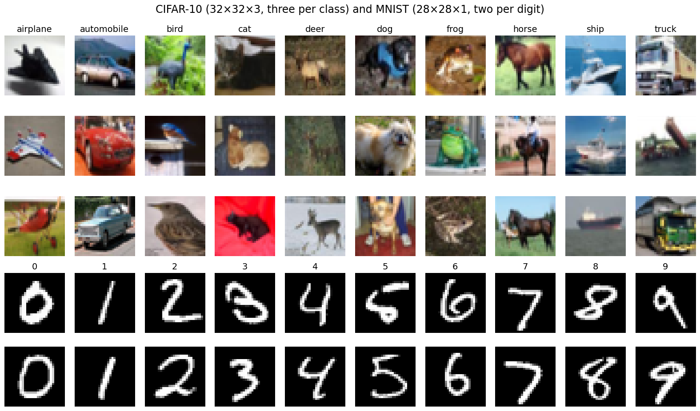
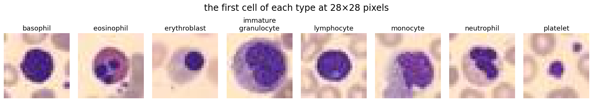
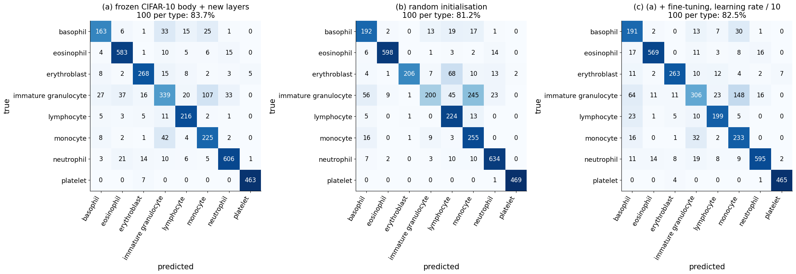
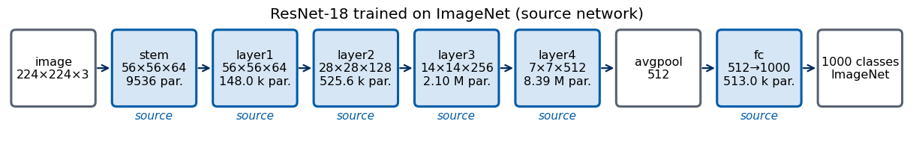
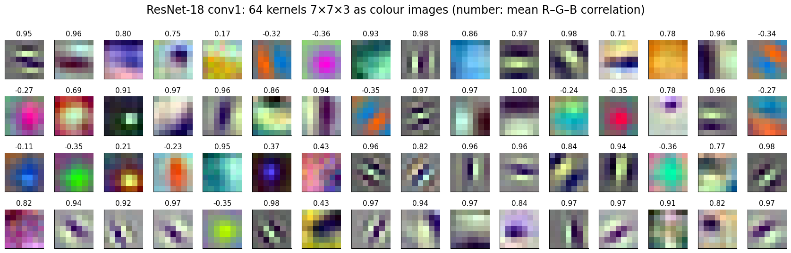
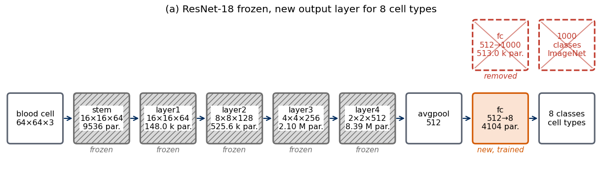
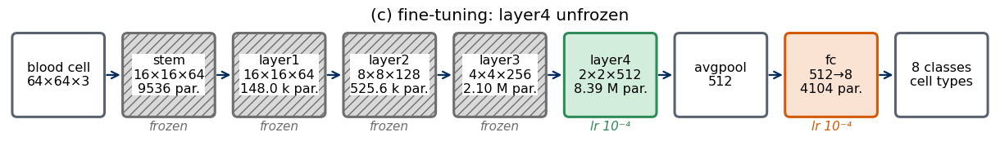
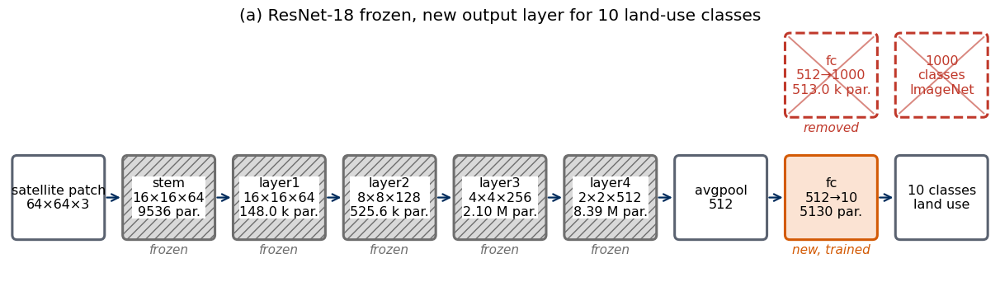
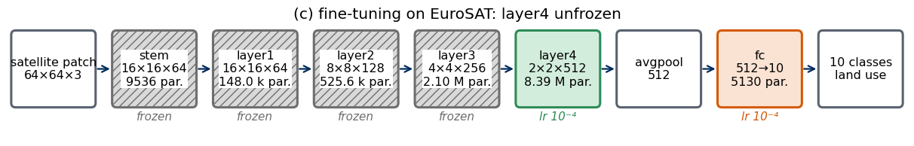
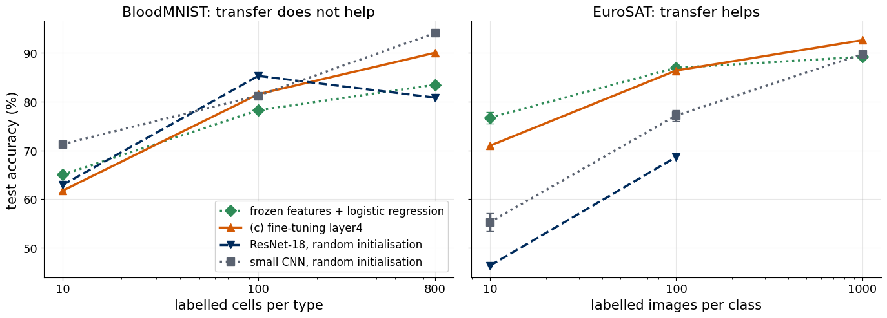

A network trained on a large data set has learned features that are often useful for a different task with far fewer labels. This notebook turns that observation into a recipe for one’s own research data: take a trained network, freeze its feature extractor, add new layers, train them, and optionally fine-tune the whole network with a smaller learning rate; or take a network pretrained by others and adapt it in the same way. Lab 014a does the same in PyTorch; the two notebooks have identical sections. This one uses JAX (array computing with automatic differentiation and compilation by XLA, Accelerated Linear Algebra), the neural-network library Flax in its flax.nnx interface, and the optimisers of Optax.
The target task is BloodMNIST, microscope images of single blood cells of eight types. Two source networks are reused: the convolutional neural network (CNN) trained on CIFAR-10 photographs in Lab 013b, and a residual network with 18 layers (ResNet-18) trained on ImageNet; Section 4 applies the same network to EuroSAT, small satellite images of European landscapes, a target much closer to its source. Flax has no collection of pretrained image networks comparable to torchvision.models, so we write ResNet-18 in flax.nnx and convert the published PyTorch weights into it.
Transfer learning in one formula.
A CIFAR-10 network on blood cells.
A pretrained ResNet-18.
A pretrained ResNet-18 on satellite images.
Cheat sheet for PyTorch and JAX.
Everything runs on the central processing unit (CPU); the whole notebook takes about 250 (measured on 8 cores of a shared machine; the JAX training loops on the CPU are several times slower than their PyTorch counterparts) minutes.
Running this notebook in Google Colab 1. Go to https://colab.research.google.com → File → Upload notebook (or open it from Google Drive). 2. Run the cells in order with Shift + Enter: later cells use variables defined earlier. 3. numpy, matplotlib, jax, flax, optax, scikit-learn, torch and torchvision are pre-installed in Colab (PyTorch is used only to download the pretrained ResNet-18 weights and to check their conversion). If flax.nnx is missing (old Flax), run !pip install -U flax optax and restart the session. 4. BloodMNIST is downloaded once from Zenodo (35 MB for \(28\times28\) pixels, 156 MB for \(64\times64\)), and CIFAR-10 once from the authors’ page (163 MB). The ResNet-18 weights (45 MB) are downloaded by torchvision on first use. 5. The CIFAR-10 network is the one trained and saved by Lab 013b. Without it the network is retrained briefly, and the numbers of Section 2 change. 6. Trained weights are saved.
The first cell tells JAX to use the CPU and hides every graphics card; this must happen before jax and torch are imported. PyTorch, used only for the pretrained weights, is limited to 8 threads.
Code
import osos.environ["JAX_PLATFORMS"] ="cpu"# JAX: CPU backend onlyos.environ["CUDA_VISIBLE_DEVICES"] =""# no graphics card visible to any frameworkimport time, gzip, pickle, tarfile, urllib.requestimport numpy as npimport matplotlib.pyplot as pltimport jaximport jax.numpy as jnpimport optaximport flaxfrom flax import nnximport flax.serializationimport torch, torchvision # only to download and check the pretrained ResNet-18 weightsfrom sklearn.linear_model import LogisticRegressionfrom sklearn.preprocessing import StandardScalerfrom sklearn.pipeline import make_pipelinetorch.set_num_threads(min(8, os.cpu_count()))UJBlue, UJNavy, DSOrange, UJGray, Green ="#005CA7", "#002B5C", "#D35A05", "#5A6270", "#2E8B57"plt.rcParams.update({"axes.spines.top": False, "axes.spines.right": False, "font.size": 15, "axes.titlesize": 16,"axes.labelsize": 15, "xtick.labelsize": 13, "ytick.labelsize": 13, "legend.fontsize": 13, "figure.titlesize": 17})DATA, RESULTS ="data", "results"for d in (DATA, RESULTS): os.makedirs(d, exist_ok=True)T_START = time.time()print("JAX", jax.__version__, "| Flax", flax.__version__, "| Optax", optax.__version__, "| devices:", jax.devices(),"| torchvision", torchvision.__version__)
Every classifier of the previous labs can be cut into two parts. The body \(f_\varphi\), with parameters \(\varphi\), turns an image \(x\) into a feature vector \(h\) of length \(d\); in a CNN these are the convolutional layers. The head \(g_\psi\), with parameters \(\psi\), turns the features into \(K\) class scores \(z\), usually with one or two dense layers: \[h=f_\varphi(x)\in\mathbb{R}^d,\qquad z=g_\psi(h)=g_\psi\big(f_\varphi(x)\big)\in\mathbb{R}^K. \tag{1}\] Training on a source task (CIFAR-10, ImageNet) gives parameters \(\varphi_s\) and \(\psi_s\). The source head predicts the source classes and is discarded. For the target task, with its own \(K\) classes and \(N\) labelled examples \((x_i,y_i)\), a new head with random initial \(\psi\) is attached, and there are two ways of training it, both minimising the mean cross-entropy \(L\) over the labelled examples.
In freezing, the body keeps the source parameters \(\varphi_s\) and only the head is trained, \[\psi^\ast=\arg\min_\psi\ \frac1N\sum_{i=1}^N L\Big(g_\psi\big(f_{\varphi_s}(x_i)\big),\,y_i\Big). \tag{2}\] In fine-tuning, training continues from \(\varphi_s\) and \(\psi^\ast\) with both sets of parameters free, but with a learning rate for the body about ten times smaller than the rate \(\eta\) used for the head; written for plain gradient descent on the loss \(\mathcal{L}\) of equation (2) (Adam uses the same two rates), \[\varphi\leftarrow\varphi-\eta_\varphi\,\nabla_\varphi\mathcal{L},\qquad \psi\leftarrow\psi-\eta\,\nabla_\psi\mathcal{L},\qquad \eta_\varphi=\frac{\eta}{10}. \tag{3}\] The small rate lets the body move away from \(\varphi_s\) only as far as the target data require; a large rate in the first steps, while the head is still random, would send large and meaningless gradients into the pretrained body.
With a frozen body, the features of equation (1) do not change during training. They can be computed once for every labelled image and stored, and training the head becomes a small problem on a table with \(N\) rows and \(d\) columns; with a linear head it is multinomial logistic regression. This is the fastest form of transfer learning and the first one to try on new data. The sketch shows the two parts of the network.
Transfer learning helps when three conditions meet: the labelled target set is small compared with the number of parameters of the body, the source images share low-level statistics with the target images (edges, textures, colour contrasts), and the target task is hard enough that a small network trained from random initialisation on the few labels does not already solve it. When one of them fails, transfer can bring nothing. Section 10 of Lab 013 gave such a case. The body of the regularised CIFAR-10 CNN, frozen, with a new head trained on MNIST digits, reached 86.8%, 95.2% and 96.3% test accuracy with 10, 100 and 1000 digits per class, while the same network trained from random initialisation reached 88.1%, 95.3% and 96.7% (Lab 013b, JAX); the PyTorch version, Lab 013a, gave 87.0%, 95.8%, 96.2% against 89.3%, 96.5%, 97.2%. MNIST is easy enough that 100 digits per class suffice for a small CNN, and white strokes on black share little with the colour photographs of CIFAR-10.
Blood cells are a harder target: eight classes that differ in the shape and texture of the nucleus and in the colour of granules in the cytoplasm, with labels that require an expert. Section 2 reuses the CIFAR-10 network of Lab 013 on them; Section 3 does the same with a large network pretrained on ImageNet.
CIFAR-10 and MNIST
Both data sets of that counterexample return in this lab: CIFAR-10 as the source of our own pretrained network, MNIST only as the target on which transfer failed.
CIFAR-10 (A. Krizhevsky, Learning Multiple Layers of Features from Tiny Images, technical report, University of Toronto, 2009, data and report) consists of 60 000 colour photographs of \(32\times32\) pixels with three channels (red, green, blue, each an integer from 0 to 255), 50 000 for training and 10 000 for testing, 6000 per class. The ten classes are everyday objects and animals: airplane, automobile, bird, cat, deer, dog, frog, horse, ship, truck. The page states no licence; the authors ask users to cite the report.
MNIST (Y. LeCun, L. Bottou, Y. Bengio, P. Haffner, Gradient-based learning applied to document recognition, Proceedings of the IEEE 86, 2278 (1998), doi:10.1109/5.726791) consists of 70 000 greyscale images of handwritten digits \(0,\dots,9\), \(28\times28\) pixels with one channel (0 = black background, 255 = white stroke), 60 000 for training and 10 000 for testing.
Both are read from the local caches used in Lab 013 or downloaded from the original sources.
Code
CIFAR_URL ="https://www.cs.toronto.edu/~kriz/cifar-10-python.tar.gz"def cifar_dir():# local copy of the CIFAR-10 batches, downloaded from the authors' page if missing (163 MB) d = os.path.join(DATA, "cifar-10-batches-py")if os.path.exists(os.path.join(d, "test_batch")): return d tgz = os.path.join(DATA, "cifar-10-python.tar.gz")print("downloading CIFAR-10 (163 MB) ...") urllib.request.urlretrieve(CIFAR_URL, tgz)with tarfile.open(tgz) as t: t.extractall(DATA, filter="data")return os.path.join(DATA, "cifar-10-batches-py")def load_batch(d, name):withopen(os.path.join(d, name), "rb") as f: b = pickle.load(f, encoding="bytes")return b[b"data"].reshape(-1, 3, 32, 32).transpose(0, 2, 3, 1), np.array(b[b"labels"], dtype=np.int32) # (N, 32, 32, 3)D_CIFAR = cifar_dir()Xc_tr_raw = np.concatenate([load_batch(D_CIFAR, f"data_batch_{i}")[0] for i inrange(1, 6)])yc_tr = np.concatenate([load_batch(D_CIFAR, f"data_batch_{i}")[1] for i inrange(1, 6)])Xc_te_raw, yc_te = load_batch(D_CIFAR, "test_batch")withopen(os.path.join(D_CIFAR, "batches.meta"), "rb") as f: CIFAR_CLASSES = [c.decode() for c in pickle.load(f, encoding="bytes")[b"label_names"]]CIFAR_MEAN = (Xc_tr_raw /255.0).mean(axis=(0, 1, 2)).astype(np.float32) # (3,) as in Lab 013aCIFAR_STD = (Xc_tr_raw /255.0).std(axis=(0, 1, 2)).astype(np.float32) # (3,)def cifar_array(X_raw):# uint8 (N, 32, 32, 3) -> standardised float32 (N, 32, 32, 3), channels lastreturn ((X_raw.astype(np.float32) /255- CIFAR_MEAN) / CIFAR_STD).astype(np.float32)Xc_te = cifar_array(Xc_te_raw)print("CIFAR-10 training:", Xc_tr_raw.shape, Xc_tr_raw.dtype, "| test:", Xc_te_raw.shape, "| classes:", CIFAR_CLASSES)print("CIFAR-10 test:", tuple(Xc_te.shape), "| channel means", CIFAR_MEAN.round(3), "| standard deviations", CIFAR_STD.round(3))
fig, axes = plt.subplots(5, 10, figsize=(16, 9.5), gridspec_kw={"height_ratios": [1, 1, 1, 0.9, 0.9]})for c inrange(10):for r inrange(3): axes[r, c].imshow(Xc_tr_raw[np.flatnonzero(yc_tr == c)[r]]) axes[0, c].set_title(CIFAR_CLASSES[c], fontsize=14)for r inrange(2): axes[3+ r, c].imshow(Xm_te[np.flatnonzero(ym_te == c)[r]], cmap="gray") axes[3, c].set_title(str(c), fontsize=14)for a in axes.ravel(): a.axis("off")fig.suptitle("CIFAR-10 (32×32×3, three per class) and MNIST (28×28×1, two per digit)"); plt.tight_layout(); plt.show()

2. A CIFAR-10 network on blood cells
The first source network is our own: the regularised CNN that Lab 013 trained on CIFAR-10 photographs. We put its convolutional body in front of new layers for the eight cell types and compare three ways of training with 10, 100 and 800 labelled cells per type.
Blood cell images
The images come from A. Acevedo, A. Merino, S. Alférez, Á. Molina, L. Boldú, J. Rodellar, A dataset of microscopic peripheral blood cell images for development of automatic recognition systems, Data in Brief 30, 105474 (2020), doi:10.1016/j.dib.2020.105474: 17 092 images of individual normal cells in peripheral blood smears, recorded with a CellaVision DM96 analyser at the Hospital Clínic of Barcelona from donors without infection, haematological or oncological disease and without pharmacological treatment, and labelled by clinical pathologists. The originals have \(360\times363\) pixels. BloodMNIST is the version of the MedMNIST collection (J. Yang et al., MedMNIST v2: A large-scale lightweight benchmark for 2D and 3D biomedical image classification, Scientific Data 10, 41 (2023), doi:10.1038/s41597-022-01721-8), resized to \(28\times28\) and \(64\times64\) pixels with three channels (red, green, blue, integers 0–255) and split into 11 959 training, 1712 validation and 3421 test images; it is distributed on Zenodo under the Creative Commons Attribution 4.0 licence. We draw the labelled examples from the training images and report every accuracy on the full test set; the validation images are not used.
The eight classes, with their integer labels:
\(c\)
cell type
what it is
0
basophil
granulocyte with large dark-violet granules that often hide the nucleus; the rarest white blood cell
1
eosinophil
granulocyte with large orange-red granules and a nucleus of usually two lobes; active against parasites and in allergy
2
erythroblast
nucleated precursor of the red blood cell, normally found in the bone marrow
3
immature granulocyte
precursors of the granulocytes: promyelocytes, myelocytes and metamyelocytes, grouped into one class
4
lymphocyte
small cell whose round, dense nucleus fills most of it, with a thin rim of blue cytoplasm; adaptive immunity
5
monocyte
the largest white blood cell, with a folded or kidney-shaped nucleus and grey-blue cytoplasm; precursor of macrophages
6
neutrophil
the most frequent white blood cell, with a nucleus of two to five lobes and pale, finely granular cytoplasm; first defence against bacteria
7
platelet
small fragment of a megakaryocyte without nucleus, involved in blood clotting
Each .npz file holds train_images of shape \((N,H,W,3)\) with uint8 values, train_labels of shape \((N,1)\), and the same arrays for val and test. The two resolutions contain the same cells in the same order. Section 2 uses the \(28\times28\) version, Section 3 the \(64\times64\) version.
Code
BLOOD_URL ="https://zenodo.org/records/10519652/files/{}?download=1"BLOOD_TYPES = ["basophil", "eosinophil", "erythroblast", "immature granulocyte","lymphocyte", "monocyte", "neutrophil", "platelet"]def load_blood(name):# read a MedMNIST .npz file from data/, download it from Zenodo if it is not there path = os.path.join(DATA, name)ifnot os.path.exists(path):print("downloading", name, "...") urllib.request.urlretrieve(BLOOD_URL.format(name), path)with np.load(path) as d:return {k: d[k] for k in d.files}b28 = load_blood("bloodmnist.npz")Xb_tr_raw, yb_tr = b28["train_images"], b28["train_labels"].ravel().astype(np.int32) # (11959, 28, 28, 3) uint8Xb_te_raw, yb_te = b28["test_images"], b28["test_labels"].ravel().astype(np.int32) # (3421, 28, 28, 3)b64 = load_blood("bloodmnist_64.npz") # the same cells at 64 x 64 pixelsassert Xb_tr_raw.shape == (11959, 28, 28, 3) and Xb_te_raw.shape == (3421, 28, 28, 3)assert np.array_equal(b64["train_labels"].ravel(), yb_tr) and np.array_equal(b64["test_labels"].ravel(), yb_te)BLOOD_GRID_PATH =None# Lab 014a saves the grid for the slidesprint(f"{'cell type':22s}{'training':>8s}{'test':>6s}")for c, name inenumerate(BLOOD_TYPES):print(f"{name:22s}{np.sum(yb_tr == c):8d}{np.sum(yb_te == c):6d}")
cell type training test
basophil 852 244
eosinophil 2181 624
erythroblast 1085 311
immature granulocyte 2026 579
lymphocyte 849 243
monocyte 993 284
neutrophil 2330 666
platelet 1643 470
Code
def blood_grid(path=None):# three training images per cell type at 64 x 64 pixels, large labels (also used on a slide)with plt.rc_context({"font.size": 13}): fig, axes = plt.subplots(3, 8, figsize=(10, 4.8))for c inrange(8):for r inrange(3): i = np.flatnonzero(yb_tr == c)[r] axes[r, c].imshow(b64["train_images"][i]); axes[r, c].axis("off") axes[0, c].set_title(BLOOD_TYPES[c].replace(" ", "\n"), fontsize=13) fig.tight_layout()if path: fig.savefig(path, dpi=150);print("saved", path) plt.show()blood_grid(BLOOD_GRID_PATH)fig, axes = plt.subplots(1, 8, figsize=(16, 3.0))for c inrange(8): axes[c].imshow(Xb_tr_raw[np.flatnonzero(yb_tr == c)[0]]); axes[c].axis("off"); axes[c].set_title(BLOOD_TYPES[c].replace(" ", "\n"), fontsize=13)fig.suptitle("the first cell of each type at 28×28 pixels"); plt.tight_layout(); plt.show()

The classes are unbalanced: neutrophils are the most frequent type, lymphocytes the rarest with 849 training images. A balanced subset with 1000 cells per type therefore does not exist, and the largest budget we use is 800 cells per type (6400 images); the others are 10 and 100 per type. For each type we fix one random order of its training images (seed 0) and take the first 10, 100 or 800; the subsets are therefore nested, every cell of the 10-per-type subset is also in the larger ones. SUB[n] holds the indices of the selected images in the training set, POS[n] their positions inside the largest subset, so that arrays prepared once for the largest subset serve all budgets.
Code
BUDGETS = [10, 100, 800] # labelled cells per typedef nested_subsets(y, budgets, seed=0):# one random order of the images of each class; the first n of every class form the subset of size n r = np.random.default_rng(seed) perms = [r.permutation(np.flatnonzero(y == c)) for c inrange(len(BLOOD_TYPES))]return {n: np.concatenate([p[:n] for p in perms]) for n in budgets}SUB = nested_subsets(yb_tr, BUDGETS) # indices into the training setPOS = {n: np.array([np.flatnonzero(SUB[BUDGETS[-1]] == i)[0] for i in SUB[n]]) for n in BUDGETS} # positions inside the largest subsetassertmin(np.bincount(yb_tr)) >=max(BUDGETS)assertset(SUB[10]) <=set(SUB[100]) <=set(SUB[800])assertall(np.array_equal(SUB[BUDGETS[-1]][POS[n]], SUB[n]) for n in BUDGETS)for n in BUDGETS: print(f"{n:4d} per type: {len(SUB[n]):5d} images, counts per type {np.bincount(yb_tr[SUB[n]])}")
10 per type: 80 images, counts per type [10 10 10 10 10 10 10 10]
100 per type: 800 images, counts per type [100 100 100 100 100 100 100 100]
800 per type: 6400 images, counts per type [800 800 800 800 800 800 800 800]
The CIFAR-10 network of Lab 013
Lab 013b saved the weights of its regularised CNN. Loading them needs the same class definition. The body consists of three convolutional blocks (convolution \(3\times3\), batch normalisation, ReLU (rectified linear unit), max pooling \(2\times2\), and dropout in the second and third block); it maps an image of shape \((N,3,32,32)\) to feature maps of shape \((N,128,4,4)\). The head flattens them to 2048 numbers and applies a dense layer with 512 units, ReLU and a dense layer with 10 outputs. The network was trained for 12 epochs on 10 000 CIFAR-10 images with augmentation and weight decay. The CIFAR-10 test set of Section 1 checks that the loaded weights reproduce the accuracy of Lab 013b.
Flax stores images channels last, \((N,H,W,C)\), so the body maps \((N,32,32,3)\) to \((N,4,4,128)\). The training utilities of Lab 013b are repeated in compact form: make_step(wrt) compiles one Adam step that differentiates and updates only the variables selected by the filter wrt, and train_steps draws the mini-batches.
Code
class CifarBody(nnx.Module):# the body of the CIFAR-10 CNN of Lab 013b: (N, 32, 32, 3) -> (N, 4, 4, 128)def__init__(self, regularise, rngs): bn = (lambda c: nnx.BatchNorm(c, momentum=0.9, rngs=rngs)) if regularise else (lambda c: None) drop = (lambda p: nnx.Dropout(p, rngs=rngs)) if regularise else (lambda p: None)self.conv1, self.bn1 = nnx.Conv(3, 32, (3, 3), padding="SAME", rngs=rngs), bn(32)self.conv2, self.bn2, self.drop2 = nnx.Conv(32, 64, (3, 3), padding="SAME", rngs=rngs), bn(64), drop(0.2)self.conv3, self.bn3, self.drop3 = nnx.Conv(64, 128, (3, 3), padding="SAME", rngs=rngs), bn(128), drop(0.3)def__call__(self, x): h = xfor conv, bn, drop in [(self.conv1, self.bn1, None), (self.conv2, self.bn2, self.drop2), (self.conv3, self.bn3, self.drop3)]: h = conv(h)if bn isnotNone: h = bn(h) h = nnx.max_pool(nnx.relu(h), (2, 2), strides=(2, 2))if drop isnotNone: h = drop(h)return hclass CifarHead(nnx.Module):def__init__(self, regularise, rngs):self.drop4 = nnx.Dropout(0.4, rngs=rngs) if regularise elseNoneself.fc1, self.fc2 = nnx.Linear(2048, 512, rngs=rngs), nnx.Linear(512, 10, rngs=rngs)def__call__(self, h): h = h.reshape(h.shape[0], -1)ifself.drop4 isnotNone: h =self.drop4(h)returnself.fc2(nnx.relu(self.fc1(h)))class CifarCNN(nnx.Module):def__init__(self, regularise, rngs):self.body, self.head = CifarBody(regularise, rngs), CifarHead(regularise, rngs)def__call__(self, x):returnself.head(self.body(x))def count_params(module):returnsum(x.size for x in jax.tree.leaves(nnx.state(module, nnx.Param)))def loss_fn(model, x, y):return optax.softmax_cross_entropy_with_integer_labels(model(x), y).mean()def make_step(wrt, loss=loss_fn):# one compiled Adam step that differentiates and updates only the variables selected by the filter `wrt`@nnx.jitdef step(model, optimizer, x, y): value, grads = nnx.value_and_grad(loss, argnums=nnx.DiffState(0, wrt))(model, x, y) optimizer.update(model, grads)return valuereturn stepstep_all = make_step(nnx.Param)def train_steps(model, optimizer, step, X, y, steps, batch=64, seed=0):# `steps` mini-batches drawn at random from (X, y); training/evaluation modes are set by the caller.# Returns (seconds, mean training loss of the last 50 steps). r = np.random.default_rng(seed) losses, t0 = [], time.time()for t inrange(steps): idx = r.integers(0, len(X), batch) losses.append(step(model, optimizer, jnp.asarray(X[idx]), jnp.asarray(y[idx]))) jax.block_until_ready(losses[-1])return time.time() - t0, float(jnp.mean(jnp.stack(losses[-50:])))def n_steps(n_per_type, epochs, minimum, batch=64):# number of mini-batch steps: `epochs` passes over the 8 * n_per_type images, but at least `minimum`returnmax(minimum, int(np.ceil(epochs *8* n_per_type / batch)))@nnx.jitdef logits_fn(model, x):return model(x)def predict(model, X, batch=500, fn=logits_fn):# logits in evaluation mode, in batches model.eval()return np.concatenate([np.asarray(fn(model, jnp.asarray(X[k:k + batch]))) for k inrange(0, len(X), batch)])def accuracy(model, X, y, fn=logits_fn):returnfloat((predict(model, X, fn=fn).argmax(1) == np.asarray(y)).mean())def weights_dict(model):# parameters and batch-norm statistics as a nested dictionary of NumPy arraysreturn jax.tree.map(np.asarray, nnx.to_pure_dict(nnx.state(model, (nnx.Param, nnx.BatchStat))))def save(model, path):withopen(path, "wb") as f: f.write(flax.serialization.msgpack_serialize(weights_dict(model)))return pathdef load(model, path): state = nnx.state(model, (nnx.Param, nnx.BatchStat))withopen(path, "rb") as f: nnx.replace_by_pure_dict(state, flax.serialization.msgpack_restore(f.read())) nnx.update(model, state)return modelcifar_cnn = CifarCNN(True, nnx.Rngs(params=0, dropout=1))W_PATH = os.path.join(RESULTS, "Lab_013b_regularised_cnn.msgpack")if os.path.exists(W_PATH): load(cifar_cnn, W_PATH);print("loaded", W_PATH)else:# fallback (e.g. in Colab): a short retraining on 10 000 CIFAR-10 images, about 3 epochsprint("weights of Lab 013b not found: retraining the regularised CNN briefly") cifar_cnn.train() train_steps(cifar_cnn, nnx.Optimizer(cifar_cnn, optax.adam(1e-3), wrt=nnx.Param), step_all, cifar_array(Xc_tr_raw[:10000]), yc_tr[:10000], steps=240, batch=128)acc_cifar = accuracy(cifar_cnn, Xc_te, yc_te)print(f"parameters: body {count_params(cifar_cnn.body)}, head {count_params(cifar_cnn.head)}")print(f"CIFAR-10 test accuracy of the loaded network: {100* acc_cifar:.1f}% (Lab 013b: 64.7%)")assert acc_cifar >0.5
loaded results/Lab_013b_regularised_cnn.msgpack
parameters: body 93696, head 1054218
CIFAR-10 test accuracy of the loaded network: 64.7% (Lab 013b: 64.7%)
Two tools make the surgery visible. draw_blocks draws a network as a chain of boxes, one per block, with its output shape, its number of parameters and its status: trained on the source task, frozen (grey, hatched), removed (red, crossed out), new and trained (orange), or unfrozen for fine-tuning (green). param_table lists, for every layer with parameters, how many it holds and whether the optimiser will change them. A convolutional block of the CIFAR-10 network is convolution, batch normalisation, ReLU and max pooling (with dropout in blocks 2 and 3). Almost all of its parameters sit in the head, 1 049 088 of 1 147 914 in the first dense layer alone; the body, the part that is transferred, is small.
Code
from matplotlib.patches import FancyBboxPatchdef short_count(p):# 1049088 -> "1.05 M par.", 18624 -> "18.6 k par.", 960 -> "960 par."returnf"{p /1e6:.2f} M par."if p >=1e6else (f"{p /1e3:.1f} k par."if p >=1e4elsef"{p} par.")# status of a block -> (fill colour, edge colour, hatch, label under the box)BLOCK_STYLE = {"data": ("white", UJGray, None, ""),"source": ("#D6E6F5", UJBlue, None, "source"),"frozen": ("#D9D9D9", "#6E6E6E", "///", "frozen"),"new": ("#FBE3D3", DSOrange, None, "new, trained"),"removed": ("white", "#C0392B", None, "removed"),"unfrozen": ("#D3EDDC", Green, None, "fine-tuned")}def draw_blocks(blocks, title, path=None, w=2.3, h=2.1, gap=0.45, fontsize=11.5):"""Draw a network as a row of boxes joined by arrows. blocks : list of dicts with keys name : first line in the box, e.g. "conv block 1"; detail : further lines (shapes, channels), may be ""; params : number of parameters (int) or None; status : one of BLOCK_STYLE ("data", "source", "frozen", "new", "removed", "unfrozen"); tag : optional text under the box replacing the default label of the status; row : 0 (default) for the main row, 1 for a box drawn above the main row (e.g. a removed head); at : for row 1, the index of the main-row box above which it is drawn. title : title of the figure; path : PNG file to save (None: only show); w, h, gap : box width, box height and horizontal gap (data units); fontsize : text size in the boxes. """ main = [b for b in blocks if b.get("row", 0) ==0] upper = [b for b in blocks if b.get("row", 0) ==1] width =len(main) * w + (len(main) -1) * gap y_up = h +0.95# bottom of the upper row top = (y_up + h +0.15) if upper else (h +0.15) scale =0.5# inches per data unit fig, ax = plt.subplots(figsize=(width * scale +0.3, (top +0.95) * scale +0.55))def box(x, y, b): fc, ec, hatch, tag = BLOCK_STYLE[b["status"]] removed = b["status"] =="removed" ax.add_patch(FancyBboxPatch((x, y), w, h, boxstyle="round,pad=0.0,rounding_size=0.12", fc=fc, ec=ec, lw=2.2, hatch=hatch, ls="--"if removed else"-", zorder=2)) lines = [b["name"]] + ([b["detail"]] if b.get("detail") else []) + ([short_count(b["params"])] if b.get("params") else []) ax.text(x + w /2, y + h /2, "\n".join(lines), ha="center", va="center", fontsize=fontsize, zorder=4, color="#C0392B"if removed else"black", bbox=dict(fc="white", ec="none", alpha=1.0, pad=0.5) if b["status"] =="frozen"elseNone)if removed: # cross out a removed block ax.plot([x +0.1, x + w -0.1], [y +0.1, y + h -0.1], color="#C0392B", lw=1.4, alpha=0.6, zorder=3) ax.plot([x +0.1, x + w -0.1], [y + h -0.1, y +0.1], color="#C0392B", lw=1.4, alpha=0.6, zorder=3) tag = b.get("tag", tag)if tag: ax.text(x + w /2, y -0.1, tag, ha="center", va="top", fontsize=fontsize -0.5, color=ec, style="italic")for i, b inenumerate(main): box(i * (w + gap), 0, b)if i >0: ax.annotate("", xy=(i * (w + gap), h /2), xytext=(i * (w + gap) - gap, h /2), arrowprops=dict(arrowstyle="->", lw=1.6, color=UJNavy))for b in upper: box(b["at"] * (w + gap), y_up, b) ax.set_xlim(-0.1, width +0.1); ax.set_ylim(-0.85, top); ax.set_aspect("equal"); ax.axis("off") ax.set_title(title, fontsize=fontsize +3) fig.tight_layout()if path: fig.savefig(path, dpi=200, bbox_inches="tight", facecolor="white");print("saved", path) plt.show()returnsum(b.get("params") or0for b in blocks if b["status"] !="removed") # parameters of the drawn networkdef param_table(model, trainable, title, depth=1):# one row per submodule path of length `depth` (or per parameter path when depth is None):# number of parameters and whether the filter `trainable` selects them rows = {} sel = {p for p, _ in nnx.state(model, trainable).flat_state()} if trainable isnotNoneelseset()for path, v in nnx.state(model, nnx.Param).flat_state(): key =".".join(str(k) for k in (path[:depth] if depth else path[:-1])) n, n_tr = rows.get(key, (0, 0)) size = np.size(v.get_value()) rows[key] = (n + size, n_tr + (size if path in sel else0))print(f"{title}\n{'layer':22s}{'parameters':>11s} status")for key, (n, n_tr) in rows.items():print(f"{key:22s}{n:11,d}{'trained'if n_tr == n else ('frozen'if n_tr ==0else'partly')}") n_all =sum(n for n, _ in rows.values()); n_tr =sum(t for _, t in rows.values())print(f"{'trainable':22s}{n_tr:11,d}\n{'frozen':22s}{n_all - n_tr:11,d}\n")def fmt_shape(shape):# (H, W, C) -> "H×W×C", (n,) -> "n"return"×".join(str(k) for k in shape)def stage_table(model, trainable, stages, title):# stages: list of (stage name, output shape, [module paths "a.b"]); trainable: filter of the trained parameters sel = {p for p, _ in nnx.state(model, trainable).flat_state()} flat = [(p, np.size(v.get_value())) for p, v in nnx.state(model, nnx.Param).flat_state()]print(f"{title}\n{'stage':14s}{'output shape':>13s}{'parameters':>11s} trainable") covered =0for name, shape, mods in stages: prefixes = [tuple(m.split(".")) for m in mods] rows = [(p, n) for p, n in flat ifany(tuple(str(k) for k in p[:len(q)]) == q for q in prefixes)] n_all, n_tr =sum(n for _, n in rows), sum(n for p, n in rows if p in sel); covered += n_allprint(f"{name:14s}{shape:>13s}{n_all:11,d}{'yes'if n_tr == n_all else ('no'if n_tr ==0else'partly')}") n_all =sum(n for _, n in flat); n_tr =sum(n for p, n in flat if p in sel)assert covered == n_allprint(f"{'total':14s}{'':>13s}{n_all:11,d}\n{'trainable':14s}{'':>13s}{n_tr:11,d}\n{'frozen':14s}{'':>13s}{n_all - n_tr:11,d}\n")
Code
def cifar_block_shapes(body, x):# output shape of each convolutional block, computed with the layers of the body (evaluation mode) body.eval(); out, h = {}, xfor i in (1, 2, 3): h = nnx.max_pool(nnx.relu(getattr(body, f"bn{i}")(getattr(body, f"conv{i}")(h))), (2, 2), strides=(2, 2)) out[i] = fmt_shape(h.shape[1:])assert h.shape == body(x).shape # the same as the body's own forward passreturn outdef cifar_body_blocks(body, status, tag=None):# one box per convolutional block, with channels, output shape and parameters read from the model sh = cifar_block_shapes(body, jnp.zeros((1, 32, 32, 3)))return [dict(name=f"conv block {i}", detail=f"{getattr(body, f'conv{i}').in_features}→{getattr(body, f'conv{i}').out_features} ch\n{sh[i]}", params=count_params(getattr(body, f"conv{i}")) + count_params(getattr(body, f"bn{i}")), status=status, **({"tag": tag} if tag else {}))for i in (1, 2, 3)]def dense_box(layer, status, tag=None, **kw):returndict(name="dense", detail=f"{layer.in_features}→{layer.out_features}", params=count_params(layer), status=status,**({"tag": tag} if tag else {}), **kw)FLAT = fmt_shape((int(np.prod(cifar_cnn.body(jnp.zeros((1, 32, 32, 3))).shape[1:])),))hd = cifar_cnn.headTOTAL_CIFAR = draw_blocks([dict(name="image", detail="32×32×3", status="data")] + cifar_body_blocks(cifar_cnn.body, "source")+ [dict(name="flatten", detail=FLAT, status="data"), dense_box(hd.fc1, "source"), dense_box(hd.fc2, "source"),dict(name=f"{hd.fc2.out_features} classes", detail="CIFAR-10", status="data")],"CIFAR-10 CNN of Lab 013 (source network)", os.path.join(RESULTS, "Lab_014b_arch_cifar_source.png"))assert TOTAL_CIFAR == count_params(cifar_cnn)
saved results/Lab_014b_arch_cifar_source.png
nnx.tabulate prints the same information module by module, with the output shape of every module for one input image and the parameters and batch statistics it holds.
Code
cifar_cnn.eval()print(nnx.tabulate(cifar_cnn, jnp.zeros((1, 32, 32, 3)), depth=2, console_kwargs={"force_terminal": False, "width": 150}))print(f"diagram total {TOTAL_CIFAR:,} parameters = parameters in nnx.state {count_params(cifar_cnn):,}")
diagram total 1,147,914 parameters = parameters in nnx.state 1,147,914
Adapting the input
A frozen body can only be used on inputs that look, numerically, like the inputs it was trained on: three colour channels, \(32\times32\) pixels, and each channel standardised with the CIFAR-10 mean \(\mu_c\) and standard deviation \(\sigma_c\) of that channel, \[x_c\;\leftarrow\;\frac{x_c/255-\mu_c}{\sigma_c},\qquad c\in\{\text{red},\text{green},\text{blue}\}, \tag{4}\] where \(x_c\) is the integer value of channel \(c\) of a pixel. BloodMNIST images already have three channels. We enlarge them from 28 to 32 pixels by bilinear interpolation (jax.image.resize), so that after three poolings the feature maps have the size \(4\times4\) that the new layers expect, and we standardise them with the CIFAR-10 statistics, not with those of BloodMNIST: the first-layer kernels and the running averages of batch normalisation were fitted to inputs on that scale. Shapes: uint8\((N,28,28,3)\) → float32\((N,32,32,3)\). We prepare the largest labelled subset (6400 images) and the 3421 test images once.
Code
def blood_as_cifar(X_raw):# uint8 (N, 28, 28, 3) -> float32 (N, 32, 32, 3), enlarged by bilinear interpolation, CIFAR-10 standardisation X = jnp.asarray(X_raw, dtype=jnp.float32) /255 X = jax.image.resize(X, (len(X), 32, 32, 3), method="bilinear")return ((np.asarray(X) - CIFAR_MEAN) / CIFAR_STD).astype(np.float32)Xa_sub, ya_sub = blood_as_cifar(Xb_tr_raw[SUB[800]]), yb_tr[SUB[800]] # largest labelled subsetXa_te, ya_te = blood_as_cifar(Xb_te_raw), yb_te # full test setassert Xa_sub.shape == (6400, 32, 32, 3) and Xa_te.shape == (3421, 32, 32, 3)print("adapted blood cells:", Xa_sub.shape, " test:", Xa_te.shape)print("channel means after CIFAR-10 standardisation:", Xa_te.mean((0, 1, 2)).round(2)," standard deviations:", Xa_te.std((0, 1, 2)).round(2))print("CIFAR-10 test images for comparison: ", Xc_te.mean((0, 1, 2)).round(2)," standard deviations:", Xc_te.std((0, 1, 2)).round(2))
channel means after CIFAR-10 standardisation: [1.22 0.73 0.95] standard deviations: [0.85 0.97 0.42]
CIFAR-10 test images for comparison: [0.01 0.01 0.01] standard deviations: [1. 1. 1.]
Under the CIFAR-10 standardisation the blood-cell images do not have zero mean and unit variance: the channel means are 1.22, 0.73 and 0.95 and the standard deviation of the blue channel is only 0.42, against 0.01 and 1.0 for CIFAR-10 test images. Blood smears are bright, pink and much less varied in colour than photographs, so the frozen first layer sees inputs shifted far from what it was trained on. This mismatch is part of what the frozen body has to cope with; it disappears once the body is allowed to adapt.
Freezing the body and adding new layers
In JAX nothing is frozen by a flag on the parameters: gradients and updates are taken only with respect to the parts we select. A filter HEAD = nnx.All(nnx.Param, nnx.PathContains("head")) selects the parameters whose path contains head. It is used twice. nnx.value_and_grad(loss, argnums=nnx.DiffState(0, HEAD)) differentiates only with respect to these parameters, so no gradient of the body is computed; and nnx.Optimizer(model, optax.adam(1e-3), wrt=HEAD) holds the Adam state for, and applies updates to, these parameters only. An equivalent route keeps the optimiser on all parameters and gives the body a transformation that discards its updates, optax.multi_transform({"train": optax.adam(1e-3), "freeze": optax.set_to_zero()}, labels), with a function that assigns a label to each parameter from its path; it is convenient when several groups need different learning rates, but it still computes the gradients of the body. Finally, the body must stay in evaluation mode, model.body.eval() after model.train(): batch normalisation would otherwise replace its running statistics (nnx.BatchStat, not parameters, updated in every training-mode forward pass) by statistics of blood-cell mini-batches, and dropout would be active.
The new layers are a dense layer from 2048 to 128 units, ReLU, dropout with rate 0.3, and a dense layer from 128 units to 8 outputs, with \[2048\cdot128+128+128\cdot8+8=263\,304 \tag{5}\] parameters (weights and biases of the two dense layers). To verify that the body stays fixed, all its variables (parameters and batch statistics) are copied before training and compared afterwards, and the sum of the absolute values of all entries is printed as a checksum.
Code
class NewHead(nnx.Module):# new layers: flatten 2048 -> dense 128 -> ReLU -> dropout 0.3 -> dense 8def__init__(self, rngs, n_classes=8):self.fc1, self.drop, self.fc2 = nnx.Linear(2048, 128, rngs=rngs), nnx.Dropout(0.3, rngs=rngs), nnx.Linear(128, n_classes, rngs=rngs)def__call__(self, h):returnself.fc2(self.drop(nnx.relu(self.fc1(h.reshape(h.shape[0], -1)))))class TransferNet(nnx.Module):def__init__(self, body, rngs, n_classes=8):self.body, self.head = body, NewHead(rngs, n_classes)def__call__(self, x):returnself.head(self.body(x))HEAD = nnx.All(nnx.Param, nnx.PathContains("head")) # filter: parameters of the new layersstep_head = make_step(HEAD)def variables(module):# copy of all parameters and batch statistics as NumPy arraysreturn jax.tree.map(np.array, nnx.to_pure_dict(nnx.state(module, (nnx.Param, nnx.BatchStat))))def checksum(tree):returnsum(float(np.abs(np.asarray(v, dtype=np.float64)).sum()) for v in jax.tree.leaves(tree))def same_tree(a, b):returnall(np.array_equal(u, v) for u, v inzip(jax.tree.leaves(a), jax.tree.leaves(b)))demo = TransferNet(nnx.clone(cifar_cnn.body), nnx.Rngs(params=0, dropout=1))n_train =sum(x.size for x in jax.tree.leaves(nnx.state(demo, HEAD)))print(f"frozen network: {n_train} trainable parameters (new layers) of {count_params(demo)}; body {count_params(demo.body)} frozen")assert n_train ==2048*128+128+128*8+8
frozen network: 263304 trainable parameters (new layers) of 357000; body 93696 frozen
The surgery on the CIFAR-10 network replaces its head. In the diagrams frozen blocks are grey and hatched (excluded from training: requires_grad=False in PyTorch, outside the optimiser’s filter in JAX), removed blocks are red and crossed out, and new blocks are orange. The body keeps its trained weights and is frozen; the old head (dense 512 and dense 10 for the ten CIFAR-10 classes) is removed; a new head ends in 8 outputs for the eight cell types. The tables list, for every layer with parameters, the number of parameters and whether they are trained, before and after freezing.
Code
param_table(demo, nnx.Param, "before freezing: CIFAR-10 body + new layers (every parameter selected)", depth=None)param_table(demo, HEAD, "after freezing the body: filter HEAD selects the trained parameters", depth=None)SHB = cifar_block_shapes(demo.body, jnp.zeros((1, 32, 32, 3)))CIFAR_STAGES = [(f"conv block {i}", SHB[i], [f"body.conv{i}", f"body.bn{i}"]) for i in (1, 2, 3)] +\ [("dense", fmt_shape((demo.head.fc1.out_features,)), ["head.fc1"]), ("dense", fmt_shape((demo.head.fc2.out_features,)), ["head.fc2"])]stage_table(demo, HEAD, CIFAR_STAGES, "per stage, after freezing (32×32 input)")def new_head_boxes(model, tag=None): hd = model.headreturn [dict(name="flatten", detail=FLAT, status="data"), dense_box(hd.fc1, "new", tag),dict(name="dropout", detail=f"rate {hd.drop.rate}\n0 par.", status="new", tag="new"), dense_box(hd.fc2, "new", tag), dict(name=f"{hd.fc2.out_features} classes", detail="cell types", status="data")]OLD_HEAD = [dense_box(cifar_cnn.head.fc1, "removed", "removed", row=1, at=5), dense_box(cifar_cnn.head.fc2, "removed", "removed", row=1, at=6),dict(name=f"{cifar_cnn.head.fc2.out_features}\nclasses", detail="CIFAR-10", status="removed", row=1, at=7, tag="")]total = draw_blocks([dict(name="blood cell", detail="28→32 px", status="data")] + cifar_body_blocks(demo.body, "frozen")+ new_head_boxes(demo) + OLD_HEAD, "(a) CIFAR-10 body frozen, new head for 8 cell types", os.path.join(RESULTS, "Lab_014b_arch_cifar_frozen.png"))assert total == count_params(demo)
before freezing: CIFAR-10 body + new layers (every parameter selected)
layer parameters status
body.bn1 64 trained
body.bn2 128 trained
body.bn3 256 trained
body.conv1 896 trained
body.conv2 18,496 trained
body.conv3 73,856 trained
head.fc1 262,272 trained
head.fc2 1,032 trained
trainable 357,000
frozen 0
after freezing the body: filter HEAD selects the trained parameters
layer parameters status
body.bn1 64 frozen
body.bn2 128 frozen
body.bn3 256 frozen
body.conv1 896 frozen
body.conv2 18,496 frozen
body.conv3 73,856 frozen
head.fc1 262,272 trained
head.fc2 1,032 trained
trainable 263,304
frozen 93,696
per stage, after freezing (32×32 input)
stage output shape parameters trainable
conv block 1 16×16×32 960 no
conv block 2 8×8×64 18,624 no
conv block 3 4×4×128 74,112 no
dense 128 262,272 yes
dense 8 1,032 yes
total 357,000
trainable 263,304
frozen 93,696
saved results/Lab_014b_arch_cifar_frozen.png
The same freezing can be written with optax.multi_transform. Every parameter receives a label from its path, "trained" for the new layers and "frozen" for the body; the trained group gets Adam, the frozen group optax.set_to_zero(), which replaces its updates by zeros. The optimiser now runs over all parameters, so gradients of the body are still computed and then discarded, which costs time but changes nothing else. One step with this optimiser leaves the body unchanged and moves the new layers. A third route, jax.lax.stop_gradient(self.body(x)) in the forward pass, makes the gradient of the body zero already during differentiation; it fixes the choice inside the model, whereas a filter or a mask leaves the model untouched.
Code
def labels_from_path(params):# "trained" for parameters under `head`, "frozen" otherwisereturn jax.tree_util.tree_map_with_path(lambda path, _: "trained"ifany(getattr(k, "key", None) =="head"for k in path) else"frozen", params)m_mask = TransferNet(nnx.clone(cifar_cnn.body), nnx.Rngs(params=0, dropout=1))tx_mask = optax.multi_transform({"trained": optax.adam(1e-3), "frozen": optax.set_to_zero()}, labels_from_path)opt_mask = nnx.Optimizer(m_mask, tx_mask, wrt=nnx.Param)before_body, before_head = variables(m_mask.body), variables(m_mask.head)m_mask.train(); m_mask.body.eval()step_all(m_mask, opt_mask, jnp.asarray(Xa_sub[:64]), jnp.asarray(ya_sub[:64]))assert same_tree(before_body, variables(m_mask.body)) andnot same_tree(before_head, variables(m_mask.head))labels = labels_from_path(nnx.to_pure_dict(nnx.state(m_mask, nnx.Param)))print("labels:", {k: sorted(set(jax.tree.leaves(v))) for k, v in labels.items()})print("one step with optax.multi_transform: body unchanged, new layers changed")
labels: {'body': ['frozen'], 'head': ['trained']}
one step with optax.multi_transform: body unchanged, new layers changed
Three training regimes
The three regimes differ only in the starting point of the body and in which parameters move:
frozen: the CIFAR-10 body, frozen, with the new layers trained by Adam with learning rate \(10^{-3}\);
random initialisation: the same architecture with a randomly initialised body, all parameters trained with learning rate \(10^{-3}\) for twice as many steps as (a);
fine-tuning: model (a) after its training, with the body unfrozen and all parameters trained for as many steps again with learning rate \(10^{-4}\), ten times smaller. Regimes (b) and (c) thus get the same total number of steps.
Every mini-batch has 64 images drawn at random from the labelled subset. A fixed number of steps for all budgets would leave the large subsets undertrained (300 steps are 240 passes over 80 images but only 3 over 6400), so the number of steps of (a) is 20 epochs, with a minimum of 300 steps: 300 steps for 10 and 100 cells per type, 2000 for 800. The mean training loss over the last 50 steps shows whether training has levelled off. Seeds are fixed, so the runs are reproducible; each model is tested on all 3421 test images.
For fine-tuning (c) the body is unfrozen again and the whole network is trained with the smaller learning rate \(10^{-4}\), starting from model (a).
EPOCHS_A, MIN_STEPS_A =20, 300# (a): 20 epochs, at least 300 steps; (b) twice as many; (c) as many againMETHODS_A = {"frozen": "(a) frozen CIFAR-10 body + new layers","random": "(b) random initialisation","finetune": "(c) (a) + fine-tuning, learning rate / 10"}acc_A = {m: [] for m in METHODS_A}; time_A = {m: [] for m in METHODS_A}; models_A = {}for n in BUDGETS: Xs, ys = Xa_sub[POS[n]], ya_sub[POS[n]] S = n_steps(n, EPOCHS_A, MIN_STEPS_A)# (a) frozen body, new layers trained ma = TransferNet(nnx.clone(cifar_cnn.body), nnx.Rngs(params=0, dropout=1)) before = variables(ma.body) ma.train(); ma.body.eval() # body: batch norm statistics fixed, no dropout t_a, l_a = train_steps(ma, nnx.Optimizer(ma, optax.adam(1e-3), wrt=HEAD), step_head, Xs, ys, S)assert same_tree(before, variables(ma.body)), "the frozen body changed"# (b) the same architecture, random initialisation, everything trained mb = TransferNet(CifarBody(True, nnx.Rngs(params=0, dropout=1)), nnx.Rngs(params=0, dropout=1)) mb.train() t_b, l_b = train_steps(mb, nnx.Optimizer(mb, optax.adam(1e-3), wrt=nnx.Param), step_all, Xs, ys, 2* S)# (c) continue from (a): unfreeze the body, train everything with a ten times smaller learning rate mc = nnx.clone(ma) mc.train() t_c, l_c = train_steps(mc, nnx.Optimizer(mc, optax.adam(1e-4), wrt=nnx.Param), step_all, Xs, ys, S, seed=1) t_c += t_aassertnot same_tree(before, variables(mc.body))for m, model, t in [("frozen", ma, t_a), ("random", mb, t_b), ("finetune", mc, t_c)]: acc_A[m].append(accuracy(model, Xa_te, ya_te)); time_A[m].append(t)if n ==100: models_A[m] = modelprint(f"n = {n}: {S} steps ({S *64/ (8* n):.0f} epochs) for (a), {2* S} for (b), {S} more for (c);"f" body checksum before {checksum(before):.6f}, after {checksum(variables(ma.body)):.6f}")print(f" final training loss (a) {l_a:.3f} (b) {l_b:.3f} (c) {l_c:.3f}")print(f" test accuracy (a) {100* acc_A['frozen'][-1]:.1f}% (b) {100* acc_A['random'][-1]:.1f}% (c) {100* acc_A['finetune'][-1]:.1f}%")
n = 10: 300 steps (240 epochs) for (a), 600 for (b), 300 more for (c); body checksum before 4290.107254, after 4290.107254
final training loss (a) 0.018 (b) 0.008 (c) 0.022
test accuracy (a) 66.3% (b) 71.3% (c) 67.1%
n = 100: 300 steps (24 epochs) for (a), 600 for (b), 300 more for (c); body checksum before 4290.107254, after 4290.107254
final training loss (a) 0.269 (b) 0.097 (c) 0.312
test accuracy (a) 83.7% (b) 81.2% (c) 82.5%
n = 800: 2000 steps (20 epochs) for (a), 4000 for (b), 2000 more for (c); body checksum before 4290.107254, after 4290.107254
final training loss (a) 0.224 (b) 0.093 (c) 0.299
test accuracy (a) 90.1% (b) 94.0% (c) 91.1%
Code
print(f"{'cells per type':>14s} | "+" | ".join(f"{METHODS_A[m]:>40s}"for m in METHODS_A))for i, n inenumerate(BUDGETS):print(f"{n:14d} | "+" | ".join(f"{100* acc_A[m][i]:33.1f}% ({time_A[m][i]:3.0f} s)"for m in METHODS_A))
Transfer from our own CIFAR-10 network gives a mixed result on blood cells. Training the same architecture from random initialisation (b) is best at 10 and at 800 cells per type, 71.3% and 94.0%, against 66.3% and 90.1% for the frozen body (a) and 67.1% and 91.1% after fine-tuning (c). At 100 cells per type the frozen body is slightly ahead, 83.7% against 81.2% for (b) and 82.5% for (c). The checksum of the frozen body is the same before and after training (4290.107254), so the optimiser indeed left it untouched. The PyTorch version of this notebook gives the same picture at 10 and 800 cells per type and a small lead of (b) at 100, so the ranking at 100 cells per type is not robust. Overall, a small source network trained on 10 000 photographs is not a strong prior for stained cells.
Confusion matrices
The confusion matrix counts \(C_{ab}\), the number of test cells of true type \(a\) predicted as type \(b\); colours show each row divided by its sum, so the diagonal is the recall of each type. We show the three models trained on 100 cells per type and save their weights.
Code
def confusion_matrix(y_true, y_pred, n=8): cm = np.zeros((n, n), dtype=int) np.add.at(cm, (np.asarray(y_true), np.asarray(y_pred)), 1)return cmdef plot_confusion(ax, cm, labels, title):# rows: true class, columns: predicted class; colour = fraction of the row, numbers = counts frac = cm / cm.sum(axis=1, keepdims=True) ax.imshow(frac, cmap="Blues", vmin=0, vmax=1)for a inrange(len(labels)):for b inrange(len(labels)): ax.text(b, a, cm[a, b], ha="center", va="center", fontsize=12, color="white"if frac[a, b] >0.5else"black") ax.set_xticks(range(len(labels))); ax.set_xticklabels(labels, rotation=60, ha="right", fontsize=13) ax.set_yticks(range(len(labels))); ax.set_yticklabels(labels, fontsize=13) ax.set_xlabel("predicted"); ax.set_ylabel("true"); ax.set_title(title, fontsize=15)def most_confused(cm): off = cm - np.diag(np.diag(cm)); a, b = np.unravel_index(off.argmax(), off.shape)returnf"{BLOOD_TYPES[a]} -> {BLOOD_TYPES[b]} ({off[a, b]} of {cm[a].sum()})"fig, axes = plt.subplots(1, 3, figsize=(22, 8))for ax, m inzip(axes, METHODS_A): pred = predict(models_A[m], Xa_te).argmax(1) cm = confusion_matrix(yb_te, pred) plot_confusion(ax, cm, BLOOD_TYPES, f"{METHODS_A[m]}\n100 per type: {100* (pred == yb_te).mean():.1f}%")print(f"{METHODS_A[m]:42s} recall per type {np.round(np.diag(cm) / cm.sum(1), 2)}; most frequent error {most_confused(cm)}")print(" saved", save(models_A[m], os.path.join(RESULTS, f"Lab_014b_cifar_cnn_{m}_100_per_type.msgpack")))plt.tight_layout(); plt.show()
(a) frozen CIFAR-10 body + new layers recall per type [0.67 0.93 0.86 0.59 0.89 0.79 0.91 0.99]; most frequent error immature granulocyte -> monocyte (107 of 579)
saved results/Lab_014b_cifar_cnn_frozen_100_per_type.msgpack
(b) random initialisation recall per type [0.79 0.96 0.66 0.35 0.92 0.9 0.95 1. ]; most frequent error immature granulocyte -> monocyte (245 of 579)
saved results/Lab_014b_cifar_cnn_random_100_per_type.msgpack
(c) (a) + fine-tuning, learning rate / 10 recall per type [0.78 0.91 0.85 0.53 0.82 0.82 0.89 0.99]; most frequent error immature granulocyte -> monocyte (148 of 579)
saved results/Lab_014b_cifar_cnn_finetune_100_per_type.msgpack

The weakest class is the same in all three models: immature granulocytes, with recall 0.59, 0.35 and 0.53 for (a), (b) and (c), confused mostly with monocytes (107, 245 and 148 of 579 test cells). These two types are morphologically closest: large cells with a big nucleus and granular cytoplasm. The randomly initialised network (b) is the most one-sided: it recognises neutrophils, eosinophils and platelets best (0.95, 0.96 and 1.0) but only a third of the immature granulocytes. Platelets, small and anucleate, are recognised almost perfectly by every model.
3. A pretrained ResNet-18
The second source network is ResNet-18, the smallest residual network of K. He, X. Zhang, S. Ren and J. Sun, Deep Residual Learning for Image Recognition, CVPR 2016, pp. 770–778, doi:10.1109/CVPR.2016.90, arXiv:1512.03385, with the weights published in torchvision, trained on ImageNet-1k (about 1.28 million photographs in 1000 classes, at \(224\times224\) pixels). Compared with the CIFAR-10 network of Section 2 it has a hundred times more parameters and was trained on a hundred times more images; the question is whether features learned on photographs of dogs, cars and mushrooms help with blood cells.
ImageNet (J. Deng, W. Dong, R. Socher, L.-J. Li, K. Li, L. Fei-Fei, ImageNet: A large-scale hierarchical image database, CVPR 2009, pp. 248–255, doi:10.1109/CVPR.2009.5206848) is a collection of photographs organised by the noun hierarchy of WordNet. The subset used for the ImageNet Large Scale Visual Recognition Challenge (O. Russakovsky et al., International Journal of Computer Vision 115, 211 (2015), doi:10.1007/s11263-015-0816-y, arXiv:1409.0575), called ImageNet-1k, has 1 281 167 training images, 50 000 validation images and 1000 classes, listed on image-net.org. The classes are everyday objects, animals, plants, food and scenes, with a strong share of fine-grained categories such as breeds of dogs; photographs vary in size and are typically a few hundred pixels wide. The images may be used for non-commercial research and education under the ImageNet terms of access. A pretrained ResNet-18 has therefore seen many textures, colours and shapes, but no microscope images of stained blood. Twenty class names drawn at random give an impression of its world.
ResNet-18 in Flax
Flax offers no collection of pretrained image networks comparable to torchvision.models, so we write the architecture ourselves, layer for layer as in torchvision, and then copy the published weights into it. The network has a stem (a \(7\times7\) convolution with stride 2, batch normalisation, ReLU, and a \(3\times3\) max pooling with stride 2), four stages layer1 to layer4 of two residual blocks each, global average pooling, and a dense layer fc from 512 features to 1000 classes. A residual block computes \[x\;\mapsto\;\mathrm{ReLU}\big(x+F(x)\big), \tag{6}\] where \(F\) is two \(3\times3\) convolutions with batch normalisation; when a block halves the image size and doubles the channels, the shortcut passes through a \(1\times1\) convolution with stride 2 and batch normalisation, so that both terms of the sum have the same shape.
Every detail has to match PyTorch for the weights to mean the same thing: convolutions without bias, explicit padding \((3,3)\) for the stem and \((1,1)\) for the \(3\times3\) convolutions (Flax’s "SAME" padding would place the extra row differently for stride 2), max pooling with padding 1, batch normalisation with \(\epsilon=10^{-5}\). The methods trunk (up to layer3) and pooled (layer4 and average pooling) are used later to store intermediate results.
torchvision.models.resnet18(weights=ResNet18_Weights.IMAGENET1K_V1) downloads the weights (about 45 MB) once. Its state_dict holds 122 tensors, and each has a counterpart in the Flax model. Three conventions differ:
convolution kernels are stored as \((C_{\text{out}},C_{\text{in}},k_h,k_w)\) in PyTorch and \((k_h,k_w,C_{\text{in}},C_{\text{out}})\) in Flax, hence w.transpose(2, 3, 1, 0);
dense weights are \((n_{\text{out}},n_{\text{in}})\) in PyTorch and \((n_{\text{in}},n_{\text{out}})\) in Flax, hence a transpose;
batch normalisation weight, bias, running_mean, running_var become scale, bias, mean, var; the counter num_batches_tracked has no counterpart and is not needed.
The conversion copies every tensor and asserts that none is left over. The decisive test is functional: the PyTorch network and the Flax network must give the same 1000 logits for the same images (in PyTorch layout \((N,3,64,64)\) and in Flax layout \((N,64,64,3)\)), up to float32 rounding.
Code
weights = torchvision.models.ResNet18_Weights.IMAGENET1K_V1tresnet = torchvision.models.resnet18(weights=weights).eval() # downloads about 45 MB on the first callsd = {k: v.numpy() for k, v in tresnet.state_dict().items()} # name -> NumPy arrayprint("ImageNet results stored with the weights:", weights.meta["_metrics"])print("twenty ImageNet classes drawn at random:", ", ".join(np.random.default_rng(1).choice(weights.meta["categories"], 20, replace=False)))print("number of PyTorch tensors:", len(sd), "| e.g.", {k: sd[k].shape for k in ["conv1.weight", "bn1.running_var", "layer2.0.downsample.0.weight", "fc.weight"]})def copy_conv(conv, w):# PyTorch (out, in, kh, kw) -> Flax (kh, kw, in, out)assert conv.kernel.shape == w.transpose(2, 3, 1, 0).shape conv.kernel[...] = jnp.asarray(w.transpose(2, 3, 1, 0))def copy_bn(bn, prefix): bn.scale[...] = jnp.asarray(sd[prefix +".weight"]); bn.bias[...] = jnp.asarray(sd[prefix +".bias"]) bn.mean[...] = jnp.asarray(sd[prefix +".running_mean"]); bn.var[...] = jnp.asarray(sd[prefix +".running_var"])def convert(model): used =set()def conv(c, name): copy_conv(c, sd[name]); used.add(name)def bn(b, prefix): copy_bn(b, prefix); used.update(prefix + s for s in [".weight", ".bias", ".running_mean", ".running_var", ".num_batches_tracked"]) conv(model.conv1, "conv1.weight"); bn(model.bn1, "bn1")for l inrange(1, 5):for i, block inenumerate(getattr(model, f"layer{l}")): p =f"layer{l}.{i}" conv(block.conv1, p +".conv1.weight"); bn(block.bn1, p +".bn1") conv(block.conv2, p +".conv2.weight"); bn(block.bn2, p +".bn2")if block.down_conv isnotNone: conv(block.down_conv, p +".downsample.0.weight"); bn(block.down_bn, p +".downsample.1") model.fc.kernel[...] = jnp.asarray(sd["fc.weight"].T); model.fc.bias[...] = jnp.asarray(sd["fc.bias"]) # (out, in) -> (in, out) used.update(["fc.weight", "fc.bias"])assert used ==set(sd), f"tensors not copied: {set(sd) - used}"return modelconvert(jresnet)print("all", len(sd), "PyTorch tensors copied")
ImageNet results stored with the weights: {'ImageNet-1K': {'acc@1': 69.758, 'acc@5': 89.078}}
twenty ImageNet classes drawn at random: Great Dane, maraca, eft, red wolf, dowitcher, printer, buckle, broccoli, quail, Band Aid, mashed potato, clog, toilet seat, space shuttle, leatherback turtle, steel drum, fly, ambulance, Leonberg, entertainment center
number of PyTorch tensors: 122 | e.g. {'conv1.weight': (64, 3, 7, 7), 'bn1.running_var': (64,), 'layer2.0.downsample.0.weight': (128, 64, 1, 1), 'fc.weight': (1000, 512)}
32 blood cells, 1000 ImageNet logits: max |PyTorch - Flax| = 2.48e-05 (largest |logit| 42.1)
same top-1 class for all 32 images: True
All 122 tensors of the torchvision ResNet-18 are copied into the Flax model, including the running statistics of the batch normalisation. On 32 blood cells the 1000 ImageNet logits of the two implementations differ by at most 2.5 × 10⁻⁵, against logits of up to 42, and the predicted class is the same for every image: the JAX network is the same function as the PyTorch one, up to floating-point rounding. The weights reach 69.8% top-1 accuracy on the ImageNet validation set, as stored with them.
Architecture and parameter count
We count the parameters of each stage and follow the shape of one input of \(224\times224\) pixels, the ImageNet size, and of \(64\times64\) pixels, the BloodMNIST size.
Code
STAGES = ["conv1", "bn1", "layer1", "layer2", "layer3", "layer4", "fc"]print(f"{'stage':8s}{'parameters':>11s}{'fraction':>9s}")for s in STAGES: k = count_params(getattr(jresnet, s))print(f"{s:8s}{k:11d}{100* k / count_params(jresnet):8.1f}%")assertsum(count_params(getattr(jresnet, s)) for s in STAGES) == count_params(jresnet) == weights.meta["num_params"]def stage_shapes(model, size): model.eval() x = jnp.zeros((1, size, size, 3)); out = {} x = model.stem(x); out["stem"] = x.shapefor s in ["layer1", "layer2", "layer3", "layer4"]:for block ingetattr(model, s): x = block(x) out[s] = x.shape out["avgpool"] = x.mean(axis=(1, 2)).shapereturn outs224, s64 = stage_shapes(jresnet, 224), stage_shapes(jresnet, 64)print(f"\n{'after':8s}{'224 x 224 input':>20s}{'64 x 64 input':>20s}")for k in s224: print(f"{k:8s}{str(s224[k]):>20s}{str(s64[k]):>20s}")
Seventy-two per cent of the 11.7 million parameters sit in layer4, and only 0.1% in the stem; the output layer for 1000 classes holds another 4.4%. On a \(224\times224\) image the last stage works on a \(7\times7\) grid; on our \(64\times64\) cells it works on a \(2\times2\) grid, so each of its units sees almost the whole cell. Average pooling turns both into the same 512 features.
The block diagram summarises the network as it was trained on ImageNet: stem, four residual stages, average pooling and the output layer with 1000 classes, each block with the number of its parameters. Seventy-two per cent of the parameters sit in layer4.
Code
STAGE_MODS = [("stem", ["conv1", "bn1"]), ("layer1", ["layer1"]), ("layer2", ["layer2"]), ("layer3", ["layer3"]), ("layer4", ["layer4"])]def resnet_stage_shapes(model, size):# output shape after the stem and after each stage, computed with the model's own modules (evaluation mode) model.eval(); x = jnp.zeros((1, size, size, 3)) h = model.stem(x); out = {"stem": fmt_shape(h.shape[1:])}for s in ["layer1", "layer2", "layer3", "layer4"]:for block ingetattr(model, s): h = block(h) out[s] = fmt_shape(h.shape[1:]) out["avgpool"] = fmt_shape(h.mean(axis=(1, 2)).shape[1:])assert np.allclose(model.fc(h.mean(axis=(1, 2))), model(x), atol=1e-4) # the same as the model's own forward passreturn outSH = {size: resnet_stage_shapes(jresnet, size) for size in (224, 64)}def resnet_blocks(model, status_of, tag_of=lambda s: None, size=64):# one box per stage: output shape and parameter count read from the modelreturn [dict(name=s, detail=SH[size][s], params=sum(count_params(getattr(model, m)) for m in mods), status=status_of(s),**({"tag": tag_of(s)} if tag_of(s) else {})) for s, mods in STAGE_MODS]def fc_box(model, status, tag=None, **kw):returndict(name="fc", detail=f"{model.fc.in_features}→{model.fc.out_features}", params=count_params(model.fc), status=status,**({"tag": tag} if tag else {}), **kw)TOTAL_RESNET = draw_blocks([dict(name="image", detail="224×224×3", status="data")] + resnet_blocks(jresnet, lambda s: "source", size=224)+ [dict(name="avgpool", detail=SH[224]["avgpool"], status="data"), fc_box(jresnet, "source"),dict(name=f"{jresnet.fc.out_features} classes", detail="ImageNet", status="data")],"ResNet-18 trained on ImageNet (source network)", os.path.join(RESULTS, "Lab_014b_arch_resnet18_source.png"))assert TOTAL_RESNET == count_params(jresnet) == weights.meta["num_params"]
saved results/Lab_014b_arch_resnet18_source.png

nnx.tabulate prints the same information module by module, with the output shape of every module for one input image and the parameters and batch statistics it holds.
Code
jresnet.eval()print(nnx.tabulate(jresnet, jnp.zeros((1, 64, 64, 3)), depth=1, console_kwargs={"force_terminal": False, "width": 150}))print(f"diagram total {TOTAL_RESNET:,} parameters = parameters in nnx.state {count_params(jresnet):,}")
diagram total 11,689,512 parameters = parameters in nnx.state 11,689,512
First-layer kernels
The converted jresnet.conv1.kernel has shape \((7,7,3,64)\): 64 kernels, each with one \(7\times7\) slice per input colour. Reordered to \((64,7,7,3)\) and each rescaled to \([0,1]\), a kernel can be shown as a small colour image. To quantify what we see, we compute for every kernel the mean correlation between its red, green and blue slices: close to 1 for a kernel that treats the three colours alike (a brightness pattern), small or negative for a kernel that compares colours.
Code
def normalise01(w):# rescale each kernel (first axis) separately to [0, 1] w = np.asarray(w, dtype=np.float64) lo = w.reshape(len(w), -1).min(1).reshape(-1, *[1] * (w.ndim -1)); hi = w.reshape(len(w), -1).max(1).reshape(-1, *[1] * (w.ndim -1))return (w - lo) / (hi - lo +1e-12)K1 = np.asarray(jresnet.conv1.kernel[...]).transpose(3, 0, 1, 2) # (7, 7, 3, 64) -> (64, 7, 7, 3) = (kernel, row, column, colour)def colour_correlation(K):# mean pairwise correlation between the R, G, B slices of each kernel S = K.reshape(len(K), -1, 3)return np.array([np.mean([np.corrcoef(s[:, i], s[:, j])[0, 1] for i, j in [(0, 1), (0, 2), (1, 2)]]) for s in S])rgb_corr = colour_correlation(K1)fig, axes = plt.subplots(4, 16, figsize=(17, 5.6))for o, a inenumerate(axes.ravel()): a.imshow(normalise01(K1)[o], interpolation="nearest"); a.set_xticks([]); a.set_yticks([]) a.set_title(f"{rgb_corr[o]:.2f}", fontsize=11)fig.suptitle("ResNet-18 conv1: 64 kernels 7×7×3 as colour images (number: mean R–G–B correlation)")plt.tight_layout(); plt.show()print(f"kernels with R-G-B correlation > 0.8: {np.sum(rgb_corr >0.8)}, < 0.3: {np.sum(rgb_corr <0.3)} of 64")

kernels with R-G-B correlation > 0.8: 40, < 0.3: 15 of 64
The 64 first-layer kernels fall into two groups. Forty have a correlation above 0.8 between their colour slices: they respond to brightness patterns, and many are oriented edge and bar detectors at several angles, or detectors of fine texture. Fifteen have a correlation below 0.3: they are colour-opponent blobs and edges. These generic features are what makes ImageNet networks transferable; they resemble the receptive fields of simple cells in the primary visual cortex.
ImageNet normalisation and 64-pixel inputs
weights.transforms() lists the preprocessing of the training: resize to 256 pixels, crop the central \(224\times224\) pixels, scale to \([0,1]\), and standardise each channel as in equation (4) with the ImageNet means \((0.485, 0.456, 0.406)\) and standard deviations \((0.229, 0.224, 0.225)\). The function blood_as_imagenet keeps the standardisation, because the first layer and the batch-normalisation statistics expect it, but not the resizing: we use the \(64\times64\) version of BloodMNIST directly. The network accepts any image size because its last step averages each of the 512 final feature maps over whatever spatial size it has (adaptive average pooling in PyTorch, a mean over the two spatial axes here), \(2\times2\) for a \(64\times64\) input instead of \(7\times7\) for \(224\times224\). The price is a change of scale: at 64 pixels a cell covers far fewer pixels than objects in ImageNet photographs did, the stem reduces it to \(16\times16\) positions, and the last stage sees only four positions. Enlarging the images to 128 pixels reduces this mismatch at four times the cost.
Shapes: uint8\((N,64,64,3)\) → float32\((N,64,64,3)\). The unchanged network with its 1000 ImageNet outputs, applied to 200 test cells, shows what it makes of blood cells.
Code
X64_sub, y64_sub = blood_as_imagenet(b64["train_images"][SUB[800]]), yb_tr[SUB[800]]X64_te, y64_te = blood_as_imagenet(b64["test_images"]), yb_teassert X64_sub.shape == (6400, 64, 64, 3) and X64_te.shape == (3421, 64, 64, 3)print("ImageNet mean", IMNET_MEAN, "std", IMNET_STD)print("blood cells (64 px):", X64_sub.shape, " test:", X64_te.shape)top = predict(jresnet, X64_te[:200]).argmax(1)names, counts = np.unique([weights.meta["categories"][i] for i in top], return_counts=True)print("ImageNet classes predicted by the unchanged network for 200 blood cells:",", ".join(f"{n} ({c})"for n, c insorted(zip(names, counts), key=lambda t: -t[1])[:5]))
ImageNet classes predicted by the unchanged network for 200 blood cells: golf ball (64), rubber eraser (19), face powder (14), remote control (14), honeycomb (13)
Without a new head the network answers in ImageNet terms: 64 of 200 blood cells are called “golf ball”, followed by “rubber eraser” (19), “face powder” and “remote control” (14 each) and “honeycomb” (13), round or textured objects of similar appearance. The predictions are meaningless as labels, but they show that the features respond to roundness and fine texture, which is what distinguishes cell types.
Stored outputs of the frozen layers
Since the frozen layers do not change and the images are not augmented, their output for a given image is the same in every training step, and it is wasteful to recompute it. We pass the 6400 labelled images of the largest subset and the 3421 test images through the frozen network once, in evaluation mode, and store two arrays: the output of layer3, shape \((N,4,4,256)\), needed for fine-tuning layer4, and the 512 pooled features after layer4, shape \((N,512)\), which are exactly the features \(h\) of equation (1) that enter the output layer. Training on stored arrays is exact, not an approximation; the trained weights of both routes agree to rounding.
Code
@nnx.jitdef trunk_and_features_fn(model, x): h3 = model.trunk(x)return h3, model.pooled(h3)def trunk_and_features(model, X, size=None, keep_h3=True, batch=256):# frozen network in evaluation mode: layer3 outputs (N, s/16, s/16, 256) and the 512 pooled features (N, 512) model.eval(); H3, Fs = [], []for k inrange(0, len(X), batch): x = jnp.asarray(X[k:k + batch])if size isnotNone: x = jax.image.resize(x, (len(x), size, size, 3), method="bilinear") h3, f = trunk_and_features_fn(model, x) Fs.append(np.asarray(f))if keep_h3: H3.append(np.asarray(h3))return (np.concatenate(H3) if keep_h3 elseNone), np.concatenate(Fs)t0 = time.time(); H3_sub, F_sub = trunk_and_features(jresnet, X64_sub); T_EXTRACT_SUB = time.time() - t0t0 = time.time(); H3_te, F_te = trunk_and_features(jresnet, X64_te); T_EXTRACT_TE = time.time() - t0assert H3_sub.shape == (6400, 4, 4, 256) and F_sub.shape == (6400, 512)print(f"stored: layer3 outputs {H3_sub.shape}, features {F_sub.shape}")print(f"time: {T_EXTRACT_SUB:.1f} s for {len(X64_sub)} training images, {T_EXTRACT_TE:.1f} s for {len(X64_te)} test images"f" ({1000* (T_EXTRACT_SUB + T_EXTRACT_TE) / (len(X64_sub) +len(X64_te)):.1f} ms per image)")@nnx.jitdef top_logits(model, h3):# the end of the network: layer4, average pooling, fcreturn model.fc(model.pooled(h3))def loss_top(model, h3, y):return optax.softmax_cross_entropy_with_integer_labels(top_logits(model, h3), y).mean()
stored: layer3 outputs (6400, 4, 4, 256), features (6400, 512)
time: 43.7 s for 6400 training images, 26.2 s for 3421 test images (7.1 ms per image)
New head on the frozen network
The new output layer replaces the old one as an attribute, model.fc = nnx.Linear(512, 8, rngs=...). The filter FC = nnx.All(nnx.Param, nnx.PathContains("fc")) selects its parameters, and both the gradient (nnx.DiffState) and the optimiser (wrt=FC) are restricted to it; the whole network stays in evaluation mode, so batch normalisation uses its ImageNet running statistics. Trained through the whole network, every step repeats the forward pass of 11 million frozen parameters for 64 images; trained on the stored features, a step costs a \(64\times512\) by \(512\times8\) matrix product, and model.fc can be passed to the optimiser on its own, because it is a module that shares its variables with model. Two copies trained for 50 steps with the same mini-batches, one through the full network and one on the stored features, and compares the resulting weights and the times.
Code
FC = nnx.All(nnx.Param, nnx.PathContains("fc")) # the new output layerNOT_FC = nnx.All(nnx.Any(nnx.Param, nnx.BatchStat), nnx.Not(nnx.PathContains("fc"))) # everything that stays frozenstep_fc = make_step(FC)def resnet_new_head(seed=0):# a copy of the converted network with a new 512 -> 8 output layer m = nnx.clone(jresnet) m.fc = nnx.Linear(512, len(BLOOD_TYPES), rngs=nnx.Rngs(seed))return mdef frozen_part(m):return jax.tree.map(np.array, nnx.to_pure_dict(nnx.state(m, NOT_FC)))n, S_DEMO =10, 50m_full, m_cached = resnet_new_head(), resnet_new_head()print(f"trainable: {sum(x.size for x in jax.tree.leaves(nnx.state(m_full, FC)))} of {count_params(m_full)} parameters")before = frozen_part(m_full)m_full.eval() # whole network in evaluation modet_full, _ = train_steps(m_full, nnx.Optimizer(m_full, optax.adam(1e-3), wrt=FC), step_fc, X64_sub[POS[n]], y64_sub[POS[n]], S_DEMO)t_cached, _ = train_steps(m_cached.fc, nnx.Optimizer(m_cached.fc, optax.adam(1e-3), wrt=nnx.Param), step_all, F_sub[POS[n]], y64_sub[POS[n]], S_DEMO)assert same_tree(before, frozen_part(m_full)), "the frozen network changed"dw = np.abs(np.asarray(m_full.fc.kernel[...]) - np.asarray(m_cached.fc.kernel[...])).max()assert dw <1e-4and np.allclose(m_full.fc.bias[...], m_cached.fc.bias[...], atol=1e-4)print(f"{S_DEMO} steps through the whole frozen network: {t_full:.1f} s; on the stored features: {t_cached:.2f} s;"f" largest difference of the trained fc weights {dw:.1e}")print(f"frozen part unchanged, checksum {checksum(before):.4f}")
trainable: 4104 of 11180616 parameters
50 steps through the whole frozen network: 25.5 s; on the stored features: 0.38 s; largest difference of the trained fc weights 0.0e+00
frozen part unchanged, checksum 169747.5759
The surgery on ResNet-18 removes the output layer for the 1000 ImageNet classes, with 513 000 parameters, and puts in its place a dense layer with 8 outputs and 4104 parameters; everything else is frozen.
Code
param_table(jresnet, nnx.Param, "pretrained ResNet-18 before the surgery (every parameter selected)")param_table(m_full, FC, "after replacing fc: filter FC selects the trained parameters")RESNET_STAGES = [(s, SH[64][s], mods) for s, mods in STAGE_MODS] + [("fc", fmt_shape((m_full.fc.out_features,)), ["fc"])]stage_table(m_full, FC, RESNET_STAGES, "per stage, after the surgery (64×64 input)")def new_fc_boxes(model, tag=None):return [dict(name="avgpool", detail=SH[64]["avgpool"], status="data"), fc_box(model, "new", tag),dict(name=f"{model.fc.out_features} classes", detail="cell types", status="data")]total = draw_blocks([dict(name="blood cell", detail="64×64×3", status="data")] + resnet_blocks(m_full, lambda s: "frozen", lambda s: "frozen")+ new_fc_boxes(m_full) + [fc_box(jresnet, "removed", "removed", row=1, at=7),dict(name=f"{jresnet.fc.out_features}\nclasses", detail="ImageNet", status="removed", row=1, at=8, tag="")],"(a) ResNet-18 frozen, new output layer for 8 cell types", os.path.join(RESULTS, "Lab_014b_arch_resnet18_frozen.png"))assert total == count_params(m_full)
pretrained ResNet-18 before the surgery (every parameter selected)
layer parameters status
bn1 128 trained
conv1 9,408 trained
fc 513,000 trained
layer1 147,968 trained
layer2 525,568 trained
layer3 2,099,712 trained
layer4 8,393,728 trained
trainable 11,689,512
frozen 0
after replacing fc: filter FC selects the trained parameters
layer parameters status
bn1 128 frozen
conv1 9,408 frozen
fc 4,104 trained
layer1 147,968 frozen
layer2 525,568 frozen
layer3 2,099,712 frozen
layer4 8,393,728 frozen
trainable 4,104
frozen 11,176,512
per stage, after the surgery (64×64 input)
stage output shape parameters trainable
stem 16×16×64 9,536 no
layer1 16×16×64 147,968 no
layer2 8×8×128 525,568 no
layer3 4×4×256 2,099,712 no
layer4 2×2×512 8,393,728 no
fc 8 4,104 yes
total 11,180,616
trainable 4,104
frozen 11,176,512
saved results/Lab_014b_arch_resnet18_frozen.png

Code
EPOCHS_HEAD, MIN_STEPS_HEAD =50, 500acc_B, time_B, models_B = {}, {}, {}for k in ["frozen", "layer4", "random", "logreg"]: acc_B[k], time_B[k] = [], []for n in BUDGETS: S = n_steps(n, EPOCHS_HEAD, MIN_STEPS_HEAD) m = resnet_new_head() t, loss = train_steps(m.fc, nnx.Optimizer(m.fc, optax.adam(1e-3), wrt=nnx.Param), step_all, F_sub[POS[n]], y64_sub[POS[n]], S) t += T_EXTRACT_SUB *len(SUB[n]) /len(SUB[800]) # plus the feature extraction of these images acc = accuracy(m.fc, F_te, y64_te) acc_B["frozen"].append(acc); time_B["frozen"].append(t); models_B[("frozen", n)] = mprint(f"n = {n:3d}: {S} steps ({S *64/ (8* n):.0f} epochs), final training loss {loss:.3f}, test accuracy {100* acc:.1f}%")assert np.allclose(predict(m, X64_te[:64]), predict(m.fc, F_te[:64]), atol=1e-4) # the full network gives the same logitsassert np.allclose(predict(m, X64_te[:64]), predict(m, H3_te[:64], fn=top_logits), atol=1e-4)
n = 10: 500 steps (400 epochs), final training loss 0.018, test accuracy 65.9%
n = 100: 625 steps (50 epochs), final training loss 0.172, test accuracy 79.1%
n = 800: 5000 steps (50 epochs), final training loss 0.182, test accuracy 85.6%
After the surgery only the new output layer is trained: 4104 parameters, against 11 176 512 frozen ones. With 50 epochs on the stored features it reaches 65.9%, 79.1% and 85.6% at 10, 100 and 800 cells per type, with final training losses between 0.02 and 0.18. The frozen ImageNet features are clearly useful: with only 10 cells per type they separate the eight classes far better than chance (12.5%), and the accuracy grows steadily with the number of labels.
The head is then trained on the stored features for 50 epochs, with a minimum of 500 steps, Adam with learning rate \(10^{-3}\). The reported time includes the share of the feature extraction that belongs to the labelled images.
Fine-tuning the last stage
Next we unfreeze layer4, the last residual stage (8.4 million parameters), and train it together with fc, starting from the models of the previous step, with learning rate \(10^{-4}\) for 5 epochs and at least 200 steps. layer4 is in training mode, so its batch normalisation uses mini-batch statistics, while everything before it stays frozen. Training runs on the stored layer3 outputs through layer4 → average pooling → fc, which is again exact.
For fine-tuning, layer4 is unfrozen together with the new output layer, so that 8.4 million of the 11.2 million parameters are trained; the stem and the first three stages stay frozen.
fine-tuning (c): filter L4FC selects layer4 and fc, learning rate 1e-4
layer parameters status
bn1 128 frozen
conv1 9,408 frozen
fc 4,104 trained
layer1 147,968 frozen
layer2 525,568 frozen
layer3 2,099,712 frozen
layer4 8,393,728 trained
trainable 8,397,832
frozen 2,782,784
per stage, fine-tuning (c) (64×64 input)
stage output shape parameters trainable
stem 16×16×64 9,536 no
layer1 16×16×64 147,968 no
layer2 8×8×128 525,568 no
layer3 4×4×256 2,099,712 no
layer4 2×2×512 8,393,728 yes
fc 8 4,104 yes
total 11,180,616
trainable 8,397,832
frozen 2,782,784
saved results/Lab_014b_arch_resnet18_finetune.png

Code
EPOCHS_FT, MIN_STEPS_FT =5, 200L4FC = nnx.All(nnx.Param, nnx.Any(nnx.PathContains("layer4"), nnx.PathContains("fc"))) # trainable in (c)step_top = make_step(L4FC, loss_top)FROZEN_C = nnx.All(nnx.Any(nnx.Param, nnx.BatchStat), nnx.Not(nnx.Any(nnx.PathContains("layer4"), nnx.PathContains("fc"))))for i, n inenumerate(BUDGETS): S = n_steps(n, EPOCHS_FT, MIN_STEPS_FT) mc = nnx.clone(models_B[("frozen", n)]) # start from the trained new head before = jax.tree.map(np.array, nnx.to_pure_dict(nnx.state(mc, FROZEN_C))) mc.eval()for block in mc.layer4: block.train() # batch norm of layer4 uses mini-batch statistics t, loss = train_steps(mc, nnx.Optimizer(mc, optax.adam(1e-4), wrt=L4FC), step_top, H3_sub[POS[n]], y64_sub[POS[n]], S, seed=1)assert same_tree(before, jax.tree.map(np.array, nnx.to_pure_dict(nnx.state(mc, FROZEN_C)))) acc = accuracy(mc, H3_te, y64_te, fn=top_logits) acc_B["layer4"].append(acc); time_B["layer4"].append(time_B["frozen"][i] + t); models_B[("layer4", n)] = mcprint(f"n = {n:3d}: {S} steps ({S *64/ (8* n):.0f} epochs) in {t:5.1f} s, final training loss {loss:.3f},"f" test accuracy {100* acc:.1f}% (new head alone: {100* acc_B['frozen'][i]:.1f}%)")assert np.allclose(predict(mc, X64_te[:64]), predict(mc, H3_te[:64], fn=top_logits), atol=1e-4)
n = 10: 200 steps (160 epochs) in 149.8 s, final training loss 0.000, test accuracy 61.7% (new head alone: 65.9%)
n = 100: 200 steps (16 epochs) in 308.0 s, final training loss 0.002, test accuracy 81.5% (new head alone: 79.1%)
n = 800: 500 steps (5 epochs) in 500.0 s, final training loss 0.036, test accuracy 90.0% (new head alone: 85.6%)
Fine-tuning layer4 helps when there are enough labels and hurts when there are not. With 10 cells per type the training loss drops to zero and the test accuracy falls from 65.9% to 61.7%: 8.4 million parameters memorise 80 images. With 100 per type the accuracy rises from 79.1% to 81.5%, with 800 per type from 85.6% to 90.0%. Fine-tuning needs more labelled data than freezing.
ResNet-18 from random initialisation
The fair reference for (a) and (c) is the same ResNet-18 with random weights, all 11.2 million parameters trained on the labelled cells, Adam with learning rate \(10^{-3}\), batch normalisation in training mode. Every step runs the full forward and backward pass, so this is the most expensive run of the notebook; it gets 3 epochs with a minimum of 300 steps, which is far less training than such a network would normally receive.
Code
EPOCHS_RAND, MIN_STEPS_RAND =3, 300for n in BUDGETS: S = n_steps(n, EPOCHS_RAND, MIN_STEPS_RAND) mr = ResNet18(len(BLOOD_TYPES), nnx.Rngs(0)) # random weights, 8 outputs mr.train() t, loss = train_steps(mr, nnx.Optimizer(mr, optax.adam(1e-3), wrt=nnx.Param), step_all, X64_sub[POS[n]], y64_sub[POS[n]], S) acc = accuracy(mr, X64_te, y64_te) acc_B["random"].append(acc); time_B["random"].append(t); models_B[("random", n)] = mrprint(f"n = {n:3d}: {S} steps ({S *64/ (8* n):.0f} epochs) in {t:5.1f} s ({t / S:.2f} s per step),"f" final training loss {loss:.3f}, test accuracy {100* acc:.1f}%")
n = 10: 300 steps (240 epochs) in 309.5 s (1.03 s per step), final training loss 0.000, test accuracy 62.9%
n = 100: 300 steps (24 epochs) in 326.0 s (1.09 s per step), final training loss 0.041, test accuracy 85.2%
n = 800: 300 steps (3 epochs) in 366.1 s (1.22 s per step), final training loss 0.207, test accuracy 80.8%
One step of the full ResNet-18 costs about 1.1 s here, far more than a step of the output layer on stored features. Trained from random initialisation for 300 steps, the network reaches 62.9%, 85.2% and 80.8%: slightly below the frozen ImageNet network with 10 cells per type, clearly above it with 100, and below it with 800, where 3 epochs are far too few for 11 million parameters (final training loss 0.21).
Features and logistic regression
The fastest variant hands the stored features to scikit-learn: each feature is standardised to zero mean and unit variance on the training rows (StandardScaler), and a multinomial logistic regression with the default L2 penalty of scikit-learn is fitted by a quasi-Newton solver. Mathematically this is the frozen network with a linear head, as in (a), with a penalty on the weights and a different optimiser. The training time reported is the feature extraction of the labelled images plus the fit.
Code
for n in BUDGETS: clf = make_pipeline(StandardScaler(), LogisticRegression(max_iter=3000)) t0 = time.time(); clf.fit(F_sub[POS[n]], yb_tr[SUB[n]]); t_fit = time.time() - t0 acc = clf.score(F_te, yb_te) t_extract = T_EXTRACT_SUB *len(SUB[n]) /len(SUB[800]) # extraction time of the n-per-type images acc_B["logreg"].append(acc); time_B["logreg"].append(t_extract + t_fit); models_B[("logreg", n)] = clfprint(f"n = {n:3d}: features {t_extract:5.1f} s + logistic regression {t_fit:5.2f} s, test accuracy {100* acc:.1f}%")
n = 10: features 0.5 s + logistic regression 0.08 s, test accuracy 65.0%
n = 100: features 5.5 s + logistic regression 1.08 s, test accuracy 78.2%
n = 800: features 43.7 s + logistic regression 9.41 s, test accuracy 83.4%
Images enlarged to 128 pixels
To measure the cost of the small input, we enlarge the images from 64 to 128 pixels by bilinear interpolation inside the extraction loop, extract the features of the 800 images of the 100-per-type subset and of the test set, and fit the same logistic regression. The computation per image grows roughly with the number of pixels, a factor of 4.
feature extraction: 64 px 7.1 ms per image, 128 px 8.9 ms per image (ratio 1.2)
logistic regression, 100 cells per type: 64 px 78.2%, 128 px 82.7%
Enlarging the cells to 128 pixels raises the accuracy of logistic regression at 100 cells per type from 78.2% to 82.7%. The ImageNet features are tuned to objects that cover many pixels, and the larger input moves the cells closer to that scale. In this run the extraction at 128 pixels took only 1.2 times longer per image than at 64 pixels (8.9 against 7.1 ms).
Comparison
The table and the figure collect the test accuracies of Section 3, with the training time of each method in brackets: for (a) and logistic regression the feature extraction of the labelled images plus the training, for (c) the time of (a) plus the fine-tuning, for (b) the full training. The small CIFAR-10 CNN architecture of Section 2, trained from random initialisation on the same cells at \(32\times32\) pixels, is added as a second reference.
Code
LABELS_B = {"frozen": "(a) frozen ResNet-18 + new head", "layer4": "(c) (a) + fine-tuning layer4","logreg": "ResNet-18 features + logistic regression", "random": "(b) ResNet-18, random initialisation"}print(f"{'cells per type':>14s} | "+" | ".join(f"{LABELS_B[m]:>40s}"for m in LABELS_B) +" | small CNN, random init.")for i, n inenumerate(BUDGETS):print(f"{n:14d} | "+" | ".join(f"{100* acc_B[m][i]:33.1f}% ({time_B[m][i]:3.0f} s)"for m in LABELS_B)+f" | {100* acc_A['random'][i]:10.1f}% ({time_A['random'][i]:3.0f} s)")plot_budget([(LABELS_B["frozen"], acc_B["frozen"], UJBlue, "o", "-"), (LABELS_B["layer4"], acc_B["layer4"], DSOrange, "^", "-"), (LABELS_B["logreg"], acc_B["logreg"], Green, "D", ":"), (LABELS_B["random"], acc_B["random"], UJNavy, "v", "--"), ("small CNN of Section 2, random init.", acc_A["random"], UJGray, "s", ":")],"ImageNet ResNet-18 → BloodMNIST (JAX)", os.path.join(RESULTS, "Lab_014b_transfer_resnet18_blood.png"))
Two findings stand out. First, logistic regression on frozen ResNet-18 features is the cheapest method, a few seconds including the feature extraction, and gives 65.0%, 78.2% and 83.4%, within about two points of the head trained with Adam (65.9%, 79.1%, 85.6%). For a new data set it is the right first experiment. Second, transfer from ImageNet does not beat training from random initialisation on this data set. The small CNN of Section 2, trained on the cells at \(32\times32\) pixels, reaches 71.3%, 81.2% and 94.0% and is the best method at 10 and 800 cells per type; the randomly initialised ResNet-18 is best at 100 (85.2%). Fine-tuning layer4 is the best transfer variant from 100 cells per type on (81.5%, 90.0%). BloodMNIST is homogeneous: centred cells, one staining protocol, one microscope, so a small network learns its few relevant features quickly.
Code
fig, axes = plt.subplots(2, 2, figsize=(16, 15))for ax, m inzip(axes.ravel(), LABELS_B):if m =="logreg": pred = models_B[(m, 100)].predict(F_te)elif m =="layer4": pred = predict(models_B[(m, 100)], H3_te, fn=top_logits).argmax(1)else: pred = predict(models_B[(m, 100)], X64_te).argmax(1) cm = confusion_matrix(yb_te, pred) plot_confusion(ax, cm, BLOOD_TYPES, f"{LABELS_B[m]}\n100 per type: {100* (pred == yb_te).mean():.1f}%")print(f"{LABELS_B[m]:42s} recall per type {np.round(np.diag(cm) / cm.sum(1), 2)}; most frequent error {most_confused(cm)}")plt.tight_layout(); plt.show()for m in ["frozen", "layer4", "random"]:print("saved", save(models_B[(m, 100)], os.path.join(RESULTS, f"Lab_014b_resnet18_{m}_100_per_type.msgpack")))clf = models_B[("logreg", 100)]path = os.path.join(RESULTS, "Lab_014b_resnet18_features_logreg_100_per_type.npz")np.savez(path, coef=clf[-1].coef_, intercept=clf[-1].intercept_, mean=clf[0].mean_, scale=clf[0].scale_);print("saved", path)
(a) frozen ResNet-18 + new head recall per type [0.79 0.8 0.73 0.63 0.84 0.77 0.87 0.89]; most frequent error immature granulocyte -> monocyte (85 of 579)
(c) (a) + fine-tuning layer4 recall per type [0.83 0.85 0.79 0.63 0.81 0.82 0.87 0.93]; most frequent error immature granulocyte -> monocyte (88 of 579)
ResNet-18 features + logistic regression recall per type [0.82 0.81 0.77 0.56 0.79 0.72 0.86 0.92]; most frequent error immature granulocyte -> monocyte (119 of 579)
(b) ResNet-18, random initialisation recall per type [0.88 0.95 0.78 0.58 0.87 0.75 0.96 0.99]; most frequent error immature granulocyte -> monocyte (102 of 579)
All four ResNet-18 models make the same main error, immature granulocytes predicted as monocytes (85 to 119 of 579), as the CIFAR-10 models of Section 2 did. The random-initialisation network has the highest recall on neutrophils (0.96) and eosinophils (0.95); fine-tuning layer4 gives the most even recall, between 0.63 and 0.93. The hard pair is the same for every network and every training regime, which points to the data (similar morphology, small images) rather than to the method.
4. A pretrained ResNet-18 on satellite images
On blood cells, neither our CIFAR-10 network nor the ImageNet ResNet-18 beat a small CNN trained from random initialisation. The same recipe is now applied to a target that resembles the source much more closely: small colour images of European landscapes taken from orbit, with ten classes defined by textures and colours (fields, forest, water, roads, houses) of the kind that fill ImageNet photographs.
Satellite images (EuroSAT)
EuroSAT (P. Helber, B. Bischke, A. Dengel, D. Borth, EuroSAT: A Novel Dataset and Deep Learning Benchmark for Land Use and Land Cover Classification, IEEE Journal of Selected Topics in Applied Earth Observations and Remote Sensing 12, 2217–2226 (2019), doi:10.1109/JSTARS.2019.2918242) consists of 27 000 image patches from the Sentinel-2 satellites of the European Copernicus programme, covering 34 European countries. One sample is a \(64\times64\) pixel patch; at the 10 m ground resolution of the visible bands it shows a square of 640 m by 640 m. The satellites record 13 spectral bands; the RGB version used here keeps the red, green and blue bands (Sentinel-2 bands B04, B03, B02) as an 8-bit colour JPEG image, three integers from 0 to 255 per pixel. The data are distributed under the MIT licence on Zenodo and on the authors’ page; the Sentinel data themselves are free under the Copernicus terms. The notebook uses the RGB version and downloads it once (95 MB) from Zenodo.
class
images
what the patch shows
AnnualCrop
3000
arable fields sown every year
Forest
3000
closed tree cover
HerbaceousVegetation
3000
grassland and shrubs, not grazed
Highway
2500
a motorway or major road crossing the patch
Industrial
2500
industrial buildings and yards
Pasture
2000
grazed meadows
PermanentCrop
2500
orchards and vineyards
Residential
3000
houses and streets
River
2500
a river crossing the patch
SeaLake
3000
open water
For each class we fix one random order of its images (seed 0). The first 200 images of every class form the test set, 2000 images in total, and the next 1000 form a pool from which the labelled training images are drawn: 10, 100 or 1000 per class. Only these 12 000 images are decoded.
Code
EURO_GRID_PATH, BEAMER_FIGS =None, False# Lab 014a saves the slide figuresimport zipfile, iofrom PIL import ImageEUROSAT_URL ="https://zenodo.org/records/7711810/files/EuroSAT_RGB.zip?download=1"def eurosat_zip():# the RGB archive: local copy first, otherwise the Zenodo record of the authors (95 MB)for name in ["EuroSAT.zip", "EuroSAT_RGB.zip"]:if os.path.exists(os.path.join(DATA, name)): return os.path.join(DATA, name) path = os.path.join(DATA, "EuroSAT_RGB.zip");print("downloading EuroSAT RGB ...") urllib.request.urlretrieve(EUROSAT_URL, path)return pathzf = zipfile.ZipFile(eurosat_zip())files =sorted(n for n in zf.namelist() if n.lower().endswith(".jpg"))EURO_CLASSES =sorted({n.split("/")[-2] for n in files}) # class = name of the parent folderby_class = [[n for n in files if n.split("/")[-2] == c] for c in EURO_CLASSES]N_TEST_EU, N_POOL_EU =200, 1000r = np.random.default_rng(0)order = [r.permutation(len(f)) for f in by_class]te_files = [by_class[c][i] for c inrange(10) for i in order[c][:N_TEST_EU]]pool_files = [by_class[c][i] for c inrange(10) for i in order[c][N_TEST_EU:N_TEST_EU + N_POOL_EU]]read =lambda names: np.stack([np.asarray(Image.open(io.BytesIO(zf.read(n))).convert("RGB")) for n in names])t0 = time.time()Xe_te_raw, ye_te = read(te_files), np.repeat(np.arange(10), N_TEST_EU).astype(np.int32) # (2000, 64, 64, 3) uint8Xe_pool_raw, ye_pool = read(pool_files), np.repeat(np.arange(10), N_POOL_EU).astype(np.int32) # (10000, 64, 64, 3) uint8assert Xe_te_raw.shape == (2000, 64, 64, 3) and Xe_pool_raw.shape == (10000, 64, 64, 3)print(f"{len(files)} images in the archive, decoded {len(te_files) +len(pool_files)} in {time.time() - t0:.1f} s")print(f"{'class':22s}{'images':>7s}")for c, f inzip(EURO_CLASSES, by_class): print(f"{c:22s}{len(f):7d}")
27000 images in the archive, decoded 12000 in 5.0 s
class images
AnnualCrop 3000
Forest 3000
HerbaceousVegetation 3000
Highway 2500
Industrial 2500
Pasture 2000
PermanentCrop 2500
Residential 3000
River 2500
SeaLake 3000
With 10 and 100 labelled images per class the result depends on which images happen to be labelled, so the cheap methods are repeated for three random draws (seeds 0, 1, 2) and reported as mean and standard deviation over the \(S\) seeds, \[\bar a=\frac1S\sum_{s=1}^{S}a_s,\qquad \sigma_a=\Big(\frac1{S-1}\sum_{s=1}^{S}(a_s-\bar a)^2\Big)^{1/2}, \tag{7}\] where \(a_s\) is the test accuracy for seed \(s\). With 1000 per class the whole pool is labelled and there is one run.
Code
BUDGETS_EU, SEEDS_EU = [10, 100, 1000], [0, 1, 2]RAND_BUDGETS_EU = [10, 100] # randomly initialised ResNet-18: two budgets (run time on the CPU)def euro_subset(n, seed):# positions in the pool of n labelled images per class (all 1000 when n = 1000) r = np.random.default_rng(100+ seed)return np.concatenate([c * N_POOL_EU + (np.arange(N_POOL_EU) if n == N_POOL_EU else r.choice(N_POOL_EU, n, replace=False))for c inrange(10)])seeds_for =lambda n: SEEDS_EU if n < N_POOL_EU else [0]assertall(np.array_equal(np.bincount(ye_pool[euro_subset(n, s)]), [n] *10) for n in BUDGETS_EU for s in seeds_for(n))Xe_pool, Xe_te = blood_as_imagenet(Xe_pool_raw), blood_as_imagenet(Xe_te_raw) # the same ImageNet standardisation, equation (4)print("EuroSAT pool", Xe_pool.shape, " test", Xe_te.shape)
EuroSAT pool (10000, 64, 64, 3) test (2000, 64, 64, 3)
Frozen ImageNet features and logistic regression
The frozen ResNet-18 turns every patch into 512 features, at the native 64 pixels and after bilinear enlargement to 128 pixels; the layer3 outputs at 64 pixels are stored as well, for fine-tuning. A logistic regression on standardised features, as in Section 3, is then fitted for every budget and seed.
Code
t0 = time.time(); H3e_pool, Fe_pool = trunk_and_features(jresnet, Xe_pool); H3e_te, Fe_te = trunk_and_features(jresnet, Xe_te)t64 = time.time() - t0t0 = time.time(); _, Fe_pool128 = trunk_and_features(jresnet, Xe_pool, size=128, keep_h3=False)_, Fe_te128 = trunk_and_features(jresnet, Xe_te, size=128, keep_h3=False); t128 = time.time() - t0n_img =len(Xe_pool) +len(Xe_te)print(f"features of {n_img} images: 64 px {t64:.1f} s ({1000* t64 / n_img:.1f} ms per image), 128 px {t128:.1f} s ({1000* t128 / n_img:.1f} ms per image)")ACC_EU = {} # (method, n) -> list of test accuracies over seedsTIME_EU = {}def record(method, n, acc, t): ACC_EU.setdefault((method, n), []).append(acc); TIME_EU.setdefault((method, n), []).append(t)LR_EU = {}for n in BUDGETS_EU:for s in seeds_for(n): idx = euro_subset(n, s)for res, (Ftr, Fte) in {"64": (Fe_pool, Fe_te), "128": (Fe_pool128, Fe_te128)}.items(): clf = make_pipeline(StandardScaler(), LogisticRegression(max_iter=3000)) t0 = time.time(); clf.fit(Ftr[idx], ye_pool[idx]); t = time.time() - t0 record(f"logreg{res}", n, clf.score(Fte, ye_te), t)if s ==0: LR_EU[(res, n)] = clfprint(f"n = {n:4d} per class: logistic regression 64 px {100* np.mean(ACC_EU[('logreg64', n)]):.1f}%,"f" 128 px {100* np.mean(ACC_EU[('logreg128', n)]):.1f}% ({len(seeds_for(n))} seed(s))")
features of 12000 images: 64 px 72.6 s (6.1 ms per image), 128 px 79.1 s (6.6 ms per image)
n = 10 per class: logistic regression 64 px 76.7%, 128 px 77.2% (3 seed(s))
n = 100 per class: logistic regression 64 px 86.9%, 128 px 88.4% (3 seed(s))
n = 1000 per class: logistic regression 64 px 89.1%, 128 px 91.2% (1 seed(s))
The frozen ImageNet features separate the land-use classes well from very few labels: logistic regression reaches 76.7% with 10 images per class (mean over three seeds, standard deviation 1.2), 86.9% with 100 and 89.1% with 1000 at 64 pixels. Enlarging the patches to 128 pixels adds 0.5 to 2.1 points (77.2%, 88.4%, 91.2%). The step from 10 to 100 labels is worth ten points, the step from 100 to 1000 only two to three.
New head and fine-tuning on EuroSAT
The surgery is the one of Section 3 with a new output layer of 10 classes instead of 8. The new layer is trained with Adam on the stored features of the 64-pixel patches (50 epochs, at least 500 steps); then layer4 is unfrozen and trained together with it on the stored layer3 outputs (5 epochs, at least 200 steps, learning rate \(10^{-4}\)), for seed 0. The diagrams and the stage table are read from the model as before.
per stage, frozen network with new output layer (64×64 input)
stage output shape parameters trainable
stem 16×16×64 9,536 no
layer1 16×16×64 147,968 no
layer2 8×8×128 525,568 no
layer3 4×4×256 2,099,712 no
layer4 2×2×512 8,393,728 no
fc 10 5,130 yes
total 11,181,642
trainable 5,130
frozen 11,176,512
saved results/Lab_014b_arch_eurosat_frozen.png

per stage, fine-tuning (c)
stage output shape parameters trainable
stem 16×16×64 9,536 no
layer1 16×16×64 147,968 no
layer2 8×8×128 525,568 no
layer3 4×4×256 2,099,712 no
layer4 2×2×512 8,393,728 yes
fc 10 5,130 yes
total 11,181,642
trainable 8,398,858
frozen 2,782,784
saved results/Lab_014b_arch_eurosat_finetune.png

Code
MODELS_EU = {}for n in BUDGETS_EU: idx = euro_subset(n, 0) m = nnx.clone(m_eu) S =max(MIN_STEPS_HEAD, int(np.ceil(EPOCHS_HEAD *10* n /64))) t_a, l_a = train_steps(m.fc, nnx.Optimizer(m.fc, optax.adam(1e-3), wrt=nnx.Param), step_all, Fe_pool[idx], ye_pool[idx], S) record("head", n, accuracy(m.fc, Fe_te, ye_te), t_a) S4 =max(MIN_STEPS_FT, int(np.ceil(EPOCHS_FT *10* n /64))) m.eval()for block in m.layer4: block.train() t_c, l_c = train_steps(m, nnx.Optimizer(m, optax.adam(1e-4), wrt=L4FC), step_top, H3e_pool[idx], ye_pool[idx], S4, seed=1) record("layer4", n, accuracy(m, H3e_te, ye_te, fn=top_logits), t_a + t_c); MODELS_EU[("layer4", n)] = mprint(f"n = {n:4d}: new head {S} steps, loss {l_a:.3f}, test {100* ACC_EU[('head', n)][0]:.1f}% | "f"layer4 {S4} steps in {t_c:.0f} s, loss {l_c:.3f}, test {100* ACC_EU[('layer4', n)][0]:.1f}%")
n = 10: new head 500 steps, loss 0.008, test 74.2% | layer4 200 steps in 149 s, loss 0.000, test 71.0%
n = 100: new head 782 steps, loss 0.045, test 86.4% | layer4 200 steps in 143 s, loss 0.002, test 86.4%
n = 1000: new head 7813 steps, loss 0.066, test 90.0% | layer4 782 steps in 2409 s, loss 0.029, test 92.5%
The new output layer trained with Adam on the stored features gives 74.2%, 86.4% and 90.0%, close to logistic regression on the same features, as it should for the same model. Fine-tuning layer4 again depends on the number of labels: with 10 per class it overfits (training loss 0.000) and falls to 71.0%, with 100 it is level (86.4%), and with 1000 per class it is the best method on this data set, 92.5%.
References trained from random initialisation
Two networks start from random weights: the same ResNet-18, trained on the 64-pixel patches with Adam (learning rate \(10^{-3}\), 3 epochs and at least 300 steps, seed 0; only for 10 and 100 per class, because a full training step of ResNet-18 in JAX on the CPU is too slow for the third budget within the run time of the notebook), and the small CNN architecture of Section 2 with new layers for 10 classes, trained on the patches reduced to \(32\times32\) pixels by averaging \(2\times2\) blocks and standardised with the means and standard deviations of the pool (twice 20 epochs and at least 600 steps, three seeds for 10 and 100 per class).
Code
for n in RAND_BUDGETS_EU: idx = euro_subset(n, 0) S =max(MIN_STEPS_RAND, int(np.ceil(EPOCHS_RAND *10* n /64))) mr = ResNet18(10, nnx.Rngs(0)); mr.train() t, loss = train_steps(mr, nnx.Optimizer(mr, optax.adam(1e-3), wrt=nnx.Param), step_all, Xe_pool[idx], ye_pool[idx], S) record("resnet_random", n, accuracy(mr, Xe_te, ye_te), t); MODELS_EU[("resnet_random", n)] = mrprint(f"n = {n:4d}: ResNet-18 random init., {S} steps in {t:.0f} s, loss {loss:.3f}, test {100* ACC_EU[('resnet_random', n)][0]:.1f}%")to32 =lambda X: (X.astype(np.float32) /255).reshape(len(X), 32, 2, 32, 2, 3).mean(axis=(2, 4)) # average of 2x2 blocksX32_pool, X32_te = to32(Xe_pool_raw), to32(Xe_te_raw) # (N, 32, 32, 3)mu32, sd32 = X32_pool.mean((0, 1, 2)), X32_pool.std((0, 1, 2))X32_pool, X32_te = ((X32_pool - mu32) / sd32).astype(np.float32), ((X32_te - mu32) / sd32).astype(np.float32)for n in BUDGETS_EU:for s in seeds_for(n): idx = euro_subset(n, s) S =2*max(MIN_STEPS_A, int(np.ceil(EPOCHS_A *10* n /64))) mc = TransferNet(CifarBody(True, nnx.Rngs(params=s, dropout=s +1)), nnx.Rngs(params=s, dropout=s +1), n_classes=10) mc.train() t, loss = train_steps(mc, nnx.Optimizer(mc, optax.adam(1e-3), wrt=nnx.Param), step_all, X32_pool[idx], ye_pool[idx], S, seed=s) record("small_cnn", n, accuracy(mc, X32_te, ye_te), t)if s ==0: MODELS_EU[("small_cnn", n)] = mcprint(f"n = {n:4d}: small CNN random init., {S} steps, test {100* np.mean(ACC_EU[('small_cnn', n)]):.1f}%"f" ± {100* np.std(ACC_EU[('small_cnn', n)], ddof=1) iflen(ACC_EU[('small_cnn', n)]) >1else0:.1f}")
n = 10: ResNet-18 random init., 300 steps in 1354 s, loss 0.049, test 46.4%
n = 100: ResNet-18 random init., 300 steps in 2052 s, loss 0.136, test 68.7%
n = 10: small CNN random init., 600 steps, test 55.3% ± 1.8
n = 100: small CNN random init., 626 steps, test 77.1% ± 1.1
n = 1000: small CNN random init., 6250 steps, test 89.7% ± 0.0
Without pretrained weights the picture changes completely. ResNet-18 from random initialisation reaches only 46.4% and 68.7% with 10 and 100 images per class, after 300 steps that take 23 and 34 minutes on the CPU; the budget of 1000 images per class is left out, because a full training step of ResNet-18 in JAX on the CPU is too slow for it. The small CNN does better, 55.3 ± 1.8%, 77.1 ± 1.1% and 89.7%, but needs about 1000 labelled images per class to come close to the frozen features, which reach 77% with 10.
Comparison on EuroSAT
The table lists the mean test accuracy over the seeds of equation (7), with the standard deviation where there are three seeds, and the training time of the first seed (for logistic regression the fit only; the features are extracted once for all methods).
Code
LABELS_EU = {"logreg64": "features 64 px + logistic regression", "logreg128": "features 128 px + logistic regression","head": "(a) frozen ResNet-18 + new fc", "layer4": "(c) (a) + fine-tuning layer4","resnet_random": "(b) ResNet-18, random initialisation", "small_cnn": "small CNN, random initialisation"}def mean_std(m, n):# mean and standard deviation over seeds, equation (7); NaN when the run was not doneif (m, n) notin ACC_EU: return np.nan, 0.0 a =100* np.array(ACC_EU[(m, n)]);return a.mean(), (a.std(ddof=1) iflen(a) >1else0.0)print(f"{'method':40s} "+" ".join(f"{n:>17d}"for n in BUDGETS_EU))for m, lab in LABELS_EU.items():print(f"{lab:40s} "+" ".join(f"{mean_std(m, n)[0]:6.1f} ± {mean_std(m, n)[1]:3.1f} ({TIME_EU.get((m, n), [np.nan])[0]:3.0f} s)"for n in BUDGETS_EU))STY = {"logreg64": (Green, "D", ":"), "logreg128": (Green, "D", "-"), "head": (UJBlue, "o", "-"), "layer4": (DSOrange, "^", "-"),"resnet_random": (UJNavy, "v", "--"), "small_cnn": (UJGray, "s", ":")}def budget_panel(ax, budgets, curves, title):# curves: list of (label, means, stds, (colour, marker, linestyle))for lab, mu, sd, (c, mk, ls) in curves: ax.errorbar(budgets, mu, yerr=sd, marker=mk, ls=ls, color=c, lw=2.5, ms=9, capsize=4, label=lab) ax.set_xscale("log"); ax.set_xticks(budgets); ax.set_xticklabels([str(b) for b in budgets]) ax.set_ylabel("test accuracy (%)"); ax.set_title(title); ax.grid(alpha=0.3)with plt.rc_context({"font.size": 16, "legend.fontsize": 12.5}): fig, ax = plt.subplots(figsize=(9.5, 5.4)) budget_panel(ax, BUDGETS_EU, [(LABELS_EU[m], [mean_std(m, n)[0] for n in BUDGETS_EU], [mean_std(m, n)[1] for n in BUDGETS_EU], STY[m])for m in LABELS_EU], "ImageNet ResNet-18 → EuroSAT") ax.set_xlabel("labelled images per class"); ax.legend(loc="lower right", framealpha=0.9) fig.tight_layout()if BEAMER_FIGS: fig.savefig(os.path.join(FIGS, "transfer_partC_eurosat.png"), dpi=200);print("saved", os.path.join(FIGS, "transfer_partC_eurosat.png")) plt.show()
On EuroSAT, transfer learning pays off clearly. With 10 labelled images per class, frozen ImageNet features with logistic regression (76.7%, or 77.2% at 128 pixels) beat the small CNN trained from random initialisation by 22 points and the randomly initialised ResNet-18 by 31; with 100 per class the gap to the small CNN is still 10 to 11 points (86.9–88.4% against 77.1%). With 1000 per class the small CNN (89.7%) comes within two points of the frozen features (89.1–91.2%), and only fine-tuning layer4 stays ahead (92.5%). The cheapest method, a logistic regression fitted in about a second on features extracted once, is also the best one at small label budgets. The entry for the randomly initialised ResNet-18 at 1000 per class is empty because that run was skipped.
Code
with plt.rc_context({"font.size": 15, "legend.fontsize": 12}): fig, axes = plt.subplots(1, 2, figsize=(14, 5.2), sharey=True) budget_panel(axes[0], BUDGETS, [("frozen features + logistic regression", 100* np.array(acc_B["logreg"]), None, STY["logreg64"]), ("(c) fine-tuning layer4", 100* np.array(acc_B["layer4"]), None, STY["layer4"]), ("ResNet-18, random initialisation", 100* np.array(acc_B["random"]), None, STY["resnet_random"]), ("small CNN, random initialisation", 100* np.array(acc_A["random"]), None, STY["small_cnn"])],"BloodMNIST: transfer does not help") budget_panel(axes[1], BUDGETS_EU, [("frozen features + logistic regression", [mean_std("logreg64", n)[0] for n in BUDGETS_EU], [mean_std("logreg64", n)[1] for n in BUDGETS_EU], STY["logreg64"]), ("(c) fine-tuning layer4", [mean_std("layer4", n)[0] for n in BUDGETS_EU], None, STY["layer4"]), ("ResNet-18, random initialisation", [mean_std("resnet_random", n)[0] for n in BUDGETS_EU], None, STY["resnet_random"]), ("small CNN, random initialisation", [mean_std("small_cnn", n)[0] for n in BUDGETS_EU], [mean_std("small_cnn", n)[1] for n in BUDGETS_EU], STY["small_cnn"])],"EuroSAT: transfer helps") axes[0].set_xlabel("labelled cells per type"); axes[1].set_xlabel("labelled images per class"); axes[1].set_ylabel("") axes[0].legend(loc="lower right", framealpha=0.9) fig.tight_layout()if BEAMER_FIGS: fig.savefig(os.path.join(FIGS, "transfer_blood_vs_eurosat.png"), dpi=200);print("saved", os.path.join(FIGS, "transfer_blood_vs_eurosat.png")) plt.show()

The two panels show the same network with the same recipe on two targets, and opposite conclusions. Three differences between the targets explain them. The first is the distance between source and target images: EuroSAT patches are natural-colour photographs of fields, forest, water, roads and roofs, the textures and colours that ImageNet photographs are full of, whereas blood smears are stained cells with colour statistics far from ImageNet (the unchanged network calls most cells “golf ball”). The second is the variability of the target: BloodMNIST cells are centred, of similar size, recorded with one microscope and one staining protocol, so a small CNN learns the few features that separate the types from 80 labelled images (71.3%); EuroSAT patches vary in season, illumination, region and scale, and ten examples per class do not cover this variety unless the features already encode it. The third is the label budget: the advantage of pretrained features is largest at 10 and 100 labels per class and shrinks at 1000. Transfer from a large pretrained network is therefore the first experiment to try when labels are scarce and the target images look like natural photographs, and it should always be compared with a small network trained from random initialisation, which on homogeneous scientific images can win.
Confusion matrices on EuroSAT
The four models trained on 100 images per class (seed 0): logistic regression on the 128-pixel features, the fine-tuned network, and the two references from random initialisation.
Code
EU_SHORT = [{"HerbaceousVegetation": "Herbaceous", "PermanentCrop": "Perm.Crop"}.get(c, c) for c in EURO_CLASSES]preds = {"logreg128": LR_EU[("128", 100)].predict(Fe_te128),"layer4": predict(MODELS_EU[("layer4", 100)], H3e_te, fn=top_logits).argmax(1),"resnet_random": predict(MODELS_EU[("resnet_random", 100)], Xe_te).argmax(1),"small_cnn": predict(MODELS_EU[("small_cnn", 100)], X32_te).argmax(1)}fig, axes = plt.subplots(2, 2, figsize=(16, 15))for ax, (m, pred) inzip(axes.ravel(), preds.items()): cm = confusion_matrix(ye_te, pred, n=10) plot_confusion(ax, cm, EU_SHORT, f"{LABELS_EU[m]}\n100 per class: {100* (pred == ye_te).mean():.1f}%") off = cm - np.diag(np.diag(cm)); a, b = np.unravel_index(off.argmax(), off.shape)print(f"{LABELS_EU[m]:40s} most frequent error {EURO_CLASSES[a]} -> {EURO_CLASSES[b]} ({off[a, b]} of 200)")plt.tight_layout(); plt.show()for m in ["layer4", "resnet_random", "small_cnn"]:print("saved", save(MODELS_EU[(m, 100)], os.path.join(RESULTS, f"Lab_014b_eurosat_{m}_100_per_class.msgpack")))clf = LR_EU[("128", 100)]; path = os.path.join(RESULTS, "Lab_014b_eurosat_logreg128_100_per_class.npz")np.savez(path, coef=clf[-1].coef_, intercept=clf[-1].intercept_, mean=clf[0].mean_, scale=clf[0].scale_);print("saved", path)
features 128 px + logistic regression most frequent error River -> Highway (20 of 200)
(c) (a) + fine-tuning layer4 most frequent error River -> Highway (24 of 200)
(b) ResNet-18, random initialisation most frequent error Highway -> River (51 of 200)
small CNN, random initialisation most frequent error River -> Highway (36 of 200)
The remaining errors of the pretrained models are between classes that genuinely look alike from orbit: rivers predicted as highways (20 and 24 of 200 for logistic regression and fine-tuning), both long bands crossing the patch. The two networks trained from random initialisation make the same confusion in either direction, highways predicted as rivers (51 of 200) for the ResNet-18 and rivers as highways (36 of 200) for the small CNN.
5. Cheat sheet for PyTorch and JAX
task
PyTorch
JAX with Flax (flax.nnx) and Optax
split body and head
modules model.body, model.head (or model.fc in torchvision)
attributes model.body, model.head, model.fc of the nnx.Module
replace a head
model.fc = nn.Linear(512, 8)
model.fc = nnx.Linear(512, 8, rngs=nnx.Rngs(0))
freeze parameters
for p in model.body.parameters(): p.requires_grad = False
no flag: select the trainable part with a filter, e.g. nnx.All(nnx.Param, nnx.PathContains("head"))